<!doctype html>
<html lang="en">
<head>
  <meta charset="utf-8">
  <meta name="viewport" content="width=device-width, initial-scale=1">
  <title>arxiv digest — 2026-09-11</title>
  <style>
:root {
  --bg: #ffffff;
  --fg: #1f2328;
  --muted: #59636e;
  --border: #d0d7de;
  --card: #f6f8fa;
  --link: #0969da;
}
body {
  max-width: 980px;
  margin: 0 auto;
  padding: 2rem 1rem 5rem;
  font-family: -apple-system, BlinkMacSystemFont, "Segoe UI", Helvetica, Arial, sans-serif;
  line-height: 1.55;
  color: var(--fg);
  background: var(--bg);
}
a { color: var(--link); }
img { max-width: 100%; height: auto; }
pre, code { background: var(--card); border-radius: 6px; }
pre { padding: 1rem; overflow-x: auto; }
blockquote { border-left: 4px solid var(--border); padding-left: 1rem; color: var(--muted); }
details { margin: 0.6rem 0; }
summary { cursor: pointer; font-weight: 600; }
.paper-figures-scroll {
  display: flex;
  gap: 1rem;
  overflow-x: auto;
  overscroll-behavior-x: contain;
  padding: 0.75rem 0.25rem 1rem;
  margin: 1rem 0 1.25rem;
  border-top: 1px solid var(--border);
  border-bottom: 1px solid var(--border);
  scroll-snap-type: x proximity;
}
.paper-figure-card {
  flex: 0 0 min(260px, 72vw);
  scroll-snap-align: start;
  background: var(--card);
  border: 1px solid var(--border);
  border-radius: 12px;
  padding: 0.55rem;
}
.paper-figure-card img {
  display: block;
  width: 100%;
  max-height: 240px;
  object-fit: contain;
  background: white;
  border-radius: 8px;
}
.paper-figure-caption {
  display: block;
  margin-top: 0.5rem;
  color: var(--muted);
  font-size: 0.85rem;
}
.figure-strip-hint {
  color: var(--muted);
  font-size: 0.9rem;
  margin-bottom: -0.3rem;
}
</style>
  <!-- MathJax: renders $...$ inline math and $$...$$ display math, plus
       \(...\) and \[...\]. Loaded from the official CDN; works offline
       once cached. Configured to skip code/pre blocks so arxiv IDs that
       look like dollar amounts don't get mangled. -->
  <script>
    window.MathJax = {
      tex: {
        inlineMath: [['$', '$'], ['\\(', '\\)']],
        displayMath: [['$$', '$$'], ['\\[', '\\]']],
        processEscapes: true,
        processEnvironments: true
      },
      options: {
        skipHtmlTags: ['script', 'noscript', 'style', 'textarea', 'pre', 'code'],
        ignoreHtmlClass: 'tex2jax_ignore',
        processHtmlClass: 'tex2jax_process'
      }
    };
  </script>
  <script id="MathJax-script" async
    src="https://cdn.jsdelivr.net/npm/mathjax@3/es5/tex-chtml.js"></script>
</head>
<body>
<header style="background-color: #333; color: white; padding: 15px; margin-bottom: 20px;">
  <h1 style="margin: 0; font-size: 24px;">
    <a href="https://ochelpan.github.io/arXiv_clean/" style="color: white; text-decoration: none;">Main</a>
  </h1>
</header>

<h1>Daily arXiv Report</h1>

<hr>
<p>
<a href="index.html">← Index</a>
 · <a href="papers_01.html">← Previous</a> · <a href="papers_03.html">Next →</a>
</p>
<hr>

<h2>Papers 21–40</h2>
<p><a id="paper-2609.09312"></a></p>
<h3 id="non-hermitian-topology-in-driven-dissipative-systems-correspondence-with-quantum-correlations-and-a-resource-for-entanglement"><a href="http://arxiv.org/abs/2609.09312v1">Non-Hermitian topology in driven-dissipative systems: correspondence with quantum correlations and a resource for entanglement</a></h3>
<p><strong>Authors:</strong> Niladri Chakraborty, Clara C. Wanjura<br>
<strong>Type:</strong> theory · <strong>Category:</strong> quantum information and computing · <strong>PDF:</strong> <a href="https://arxiv.org/pdf/2609.09312v1">https://arxiv.org/pdf/2609.09312v1</a><br>
<strong>Analysis basis:</strong> full PDF text, analyzed in chunks
<strong>Topic relevance:</strong> <code>analog quantum simulation</code> <strong>3/5</strong> · <code>correlated / nonlocal dissipation</code> <strong>3/5</strong> · <code>driven-dissipative phase transition</code> <strong>3/5</strong> · <code>methods for driven-dissipative</code> <strong>3/5</strong> · <code>Keldysh / 2PI / non-Gaussian methods</code> <strong>2/5</strong> · <code>non-equilibrium universality</code> <strong>2/5</strong></p>
<div class="figure-strip-hint">↔ Scroll figures horizontally</div>
<div class="paper-figures-scroll">
<figure class="paper-figure-card">
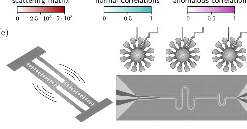
<figcaption class="paper-figure-caption"><b>Fig 1.</b> FIG. 1. Directional topological amplifiers generate long-range correlations in their output fields. (a) We consider systems of cou- pled bosonic modes, here, concretely, two sets of bosonic modes ˆaj and ˆbj are coupled with complex hopping and two-mode squeezing (TMS) interactions, see Eq. (7). Waveguides couple input fields as well as input noise into each of the modes. (b) For certain parame- ter regimes, such chains exhibit non-trivial non-Hermitian topology in the form of a winding number, Eq. (3). Here, regimes of non- trivial topology are soley determined through the cooperativity C, the competition between two-mode squeezing and local dissipation and the phase controlling...</figcaption>
</figure>
<figure class="paper-figure-card">

<figcaption class="paper-figure-caption"><b>Fig 2.</b> FIG. 2. Emergence of correlations in non-trivial non-Hermitian topological phases. (a)-c Normal and anomalous correlations, Eq. (11), are a witness of non-Hermitian topological phase transi- tions, Eq. (17). (a) In the trivial phase, the correlations are ex- ponentially attenuated as a function of the distance between the modes, while in non-trivial phase, the correlations Mj,ℓgrow exponentially as a function of distance between modes (for any ν(j −ℓ) &gt; 0). At the transition, the correlations are uniform across the system. For clarity, we only show the normal correla- tions between ˆaj modes, N (a,a) j,ℓ here; normal correlations N (b,b) j,ℓ between ˆbj modes and anomalous correlations...</figcaption>
</figure>
<figure class="paper-figure-card">

<figcaption class="paper-figure-caption"><b>Fig 3.</b> FIG. 3. Understanding entanglement through competing correlations and mode occupations. (a) When the local squeezing of the output state Aj,j = 0 is zero, the the condition for bi-partite entanglement for a given mode occupation ratio Υj,ℓ, Eq. (24), is purely determined by the normalised correlations, ¯ Aj,ℓand ¯ Nj,ℓ. The colour gradient in the set of entangled state denotes the value of the entanglement monotone logarithmic negativity, which is 0 in the separable region and positive in the entangled region. In the separable region, we instead plot the smallest symplectic eigenvalue with µ−1 = 1/2 corresponding to vacuum, i.e., minimal uncertainty. The state at the apex (red star) also...</figcaption>
</figure>
<figure class="paper-figure-card">

<figcaption class="paper-figure-caption"><b>Fig 4.</b> FIG. 4. Entanglement generation in different operation regimes. (a)-(c) Logarithmic negativity and smallest symplectic eigenvalue µ−1 as a function of the cooperativity for (a) the perfectly unidi- rectional amplifier chain (θ = π</figcaption>
</figure>
<figure class="paper-figure-card">

<figcaption class="paper-figure-caption"><b>Fig 5.</b> FIG. 5. Correlations and entanglement in the bosonic Kitaev Chain. (a) In the bosonic Kitaev chain [69], Eq. (25), neighbouring modes are connected via beamsplitter and two-mode-squeezing in- teractions. (b) Correlations N N</figcaption>
</figure>
</div>

<p><strong>Summary.</strong> This paper establishes a deep link between non-Hermitian topology and quantum correlations in dissipative systems. By analyzing quantum fluctuations beyond mean fields, the authors show that topological features generate long-range correlations and dictate the localized nature of entanglement. This provides a powerful theoretical tool for engineering quantum information processing in platforms like optomechanics.</p>
<p><strong>Why it may be interesting.</strong> This work directly connects topological invariants (a robust mathematical concept) to measurable quantum resources like entanglement and correlations in open quantum systems, which is highly relevant for designing quantum devices.</p>
<details>
<summary>Detailed structure</summary>
<p><strong>Main problem.</strong> The work extends the understanding of non-Hermitian topology, previously linked to classical mean-field response, to quantify its role in generating and characterizing quantum correlations and entanglement.</p>
<p><strong>Main result.</strong> Non-trivial non-Hermitian topology generates quantum correlations that grow exponentially with distance, and entanglement remains localized at the boundaries of the system.</p>
<p><strong>Method.</strong> The authors derive analytic expressions for normal and anomalous correlations by analyzing quantum fluctuations (second moments) in the system's dynamics, extending the topological framework from first moments.</p>
<p><strong>Model / system.</strong> The study uses driven-dissipative bosonic chains, exemplified by phase-preserving directional amplifiers and the bosonic Kitaev chain, modeled by quantum Langevin equations.</p>
<p><strong>Key observables.</strong> Normal and anomalous correlations, entanglement (logarithmic negativity), and the topological invariant (winding number $\nu$).</p>
<p><strong>Important parameters / regimes.</strong> The correlation length, the degree of non-trivial topology ($\nu$), and the competition between anomalous correlations and mode occupation asymmetry.</p>
<p><strong>Assumptions / limitations.</strong> The analysis often assumes a perfectly directional regime for the scattering matrix and that the system remains in a regime where anomalous correlations saturate at a physical limit.</p>
<p><strong>Figures summary.</strong> Figures illustrate directional topological amplifiers, showing the correspondence between non-trivial topology and long-range correlations, and demonstrate the evolution of entanglement and singular vectors under boundary perturbations.</p>
<p><strong>Paper structure.</strong> The paper first establishes the mean-field correspondence, then derives quantum correlation expressions, and finally analyzes entanglement evolution by examining boundary perturbations on the correlation structure.</p>
</details>
<details>
<summary>Abstract</summary>
<p>Directional amplification, in which signals are amplified selectively depending on their propagation direction, is a key resource for quantum information processing and stands in one-to-one correspondence with non-trivial non-Hermitian topology. So far, this correspondence has concerned the mean fields, and thus classical response. Here we turn to the quantum fluctuations, giving access to correlations and entanglement. For phase-preserving amplifiers, we derive analytic expressions for the normal and anomalous correlations, showing that non-trivial topology produces correlations that grow exponentially with the distance between modes and approach the largest values compatible with the uncertainty relations. The associated correlation length diverges at the topological phase transition. Entanglement nonetheless remains local, set by the competition between normalised anomalous correlations and the asymmetry of the mode occupations. For the bosonic Kitaev chain, a phase-sensitive amplifier, the system instead splits into two halves that are internally fully correlated yet mutually uncorrelated. Our work prepares the ground for exploring the quantum properties of non-Hermitian topological systems with state-of-the-art platforms such as cavity optomechanics and superconducting circuits.</p>
</details>
<p><sub><a href="#top">↑ back to top</a></sub></p>

<p><a id="paper-2609.09979"></a></p>
<h3 id="thermodynamic-and-statistical-signatures-of-modality-changes-in-concentration-distributions-driven-by-stochastic-switching-between-two-activity-states"><a href="http://arxiv.org/abs/2609.09979v1">Thermodynamic and Statistical Signatures of Modality Changes in Concentration Distributions Driven by Stochastic Switching Between Two Activity States</a></h3>
<p><strong>Authors:</strong> Aindrila Deb, Pintu Patra<br>
<strong>Type:</strong> theory · <strong>Category:</strong> statistical mechanics · <strong>PDF:</strong> <a href="https://arxiv.org/pdf/2609.09979v1">https://arxiv.org/pdf/2609.09979v1</a><br>
<strong>Analysis basis:</strong> full PDF text, analyzed in chunks
<strong>Topic relevance:</strong> <code>driven-dissipative phase transition</code> <strong>3/5</strong> · <code>methods for driven-dissipative</code> <strong>3/5</strong> · <code>non-equilibrium universality</code> <strong>3/5</strong> · <code>Full counting statistics</code> <strong>2/5</strong> · <code>quantum measurements</code> <strong>2/5</strong> · <code>Keldysh / 2PI / non-Gaussian methods</code> <strong>1/5</strong> · <code>correlated / nonlocal dissipation</code> <strong>1/5</strong></p>
<div class="figure-strip-hint">↔ Scroll figures horizontally</div>
<div class="paper-figures-scroll">
<figure class="paper-figure-card">

<figcaption class="paper-figure-caption"><b>Fig 1.</b> FIG. 1: Stochastic switching between two activity states coupled to accumulation dynamics. (a) We consider a genetic state that stochastically transitions between the ON (active) and OFF (inactive) activity states and vice versa with rates kon and koff, respectively. In each state, the molecular copy number, n, undergoes production at rates αon or αoff, and linear degradation at rates βonn or βoffn. (b) The joint state space (S, n) illustrates different transitions. Horizontal transitions represent intra-state production and degradation processes, while vertical transitions represent discrete switching between the two activity states. The dashed circles show the local steady-state...</figcaption>
</figure>
<figure class="paper-figure-card">

<figcaption class="paper-figure-caption"><b>Fig 2.</b> FIG. 2: Variation of mean, Fano factor components, and EPR with degradation rate. (a) Variation of mean molecular copy number (⟨n⟩) with the degradation rate (β). The grey dashed line corresponds to the first term (weighted average) in the mean expression (Eq. 7). (b) Variation of each term in Fano factor expression (Eq. 8) (which contributes to the excess Fano factor, (F −1)⟨n⟩ (ϕon−ϕoff)2 ) with degradation rate β. The curves (dashed and</figcaption>
</figure>
<figure class="paper-figure-card">

<figcaption class="paper-figure-caption"><b>Fig 3.</b> FIG. 3: Steady-state probability distributions across the different switching rates. Each panel shows the exact analytical steady-state distributions for the ON state (Pn, yellow), OFF state (Qn, brown), and the total probability (ψn = Pn + Qn, black dashed curve), computed from Eqs. 5–6. The base switching rate kon increases along the horizontal axis (left to right), and the switching bias koff/kon increases along the vertical axis (bottom to top). Parameters are fixed at αon = 3.0, αoff = 1.0, βon = 0.1, βoff = 0.2, giving intrinsic levels ϕon = 30.0 and ϕoff = 5.0.</figcaption>
</figure>
<figure class="paper-figure-card">

<figcaption class="paper-figure-caption"><b>Fig 4.</b> FIG. 4: Variation of Fano factor and EPR. (a) Fano factor F (left sub-panel) and entropy production rate ˙S (right sub-panel) plotted against the mean copy number ⟨n⟩as parametric curves, with the base switching rate kon fixed and the bias koff/kon is varied (arrows indicate the direction of increasing koff). Each curve traces a characteristic curve: at extreme bias one state dominates, the distribution is near-Poissonian, and both F ≈1 and ˙S ≈0; at intermediate bias both states are substantially occupied, F and ˙S reach their respective maxima. (b) Fano factor F (left sub-panel) and EPR ˙S (right sub-panel) plotted with the switching ratio koff/kon fixed and both kon and koff are varied...</figcaption>
</figure>
</div>

<p><strong>Summary.</strong> This work develops a theoretical framework to analyze molecular accumulation in systems that stochastically switch between two activity states. By solving the Chemical Master Equation, the authors analytically compute key metrics like the Fano factor and Entropy Production Rate. The results clarify how the underlying kinetic rates govern the resulting molecular noise and thermodynamic dissipation, offering broad applicability to biological and physical systems exhibiting switching behavior.</p>
<p><strong>Why it may be interesting.</strong> The rigorous connection drawn between non-equilibrium thermodynamics (EPR) and molecular noise (Fano factor) in a switching system provides a powerful, quantitative tool applicable to open quantum systems where environmental coupling drives non-equilibrium steady states.</p>
<details>
<summary>Detailed structure</summary>
<p><strong>Main problem.</strong> The paper investigates the thermodynamic and statistical signatures of changes in molecular concentration distributions that arise from stochastic switching between two distinct activity states.</p>
<p><strong>Main result.</strong> It establishes a generalized framework showing how kinetic parameters dictate molecular distributions, noise (Fano factor), and dissipation (Entropy Production Rate) during these stochastic switching events.</p>
<p><strong>Method.</strong> The authors use the Chemical Master Equation (CME) formalism, solved via the Probability Generating Function (PGF), to derive exact analytical expressions for the steady-state statistics.</p>
<p><strong>Model / system.</strong> The model is a generalized two-state promoter switching system for mRNA accumulation, incorporating state-dependent production and degradation rates. The dynamics are governed by coupled master equations for the probabilities in the ON and OFF states.</p>
<p><strong>Key observables.</strong> Fano factor (statistical fluctuations), Entropy Production Rate (EPR, thermodynamic dissipation), and the steady-state probability distribution (which can be unimodal or bimodal).</p>
<p><strong>Important parameters / regimes.</strong> Stochastic switching rates ($k_{on}, k_{off}$), state-dependent production ($\alpha$) and degradation ($eta$) rates, and the ratio of these rates.</p>
<p><strong>Assumptions / limitations.</strong> The analysis is based on the two-state model and assumes first-order kinetics for degradation, though it extends beyond the null model of constant degradation.</p>
<p><strong>Figures summary.</strong> Figures illustrate the schematic of state switching, the joint state space, representative stochastic trajectories showing relaxation, and heatmaps visualizing the variation of the Fano factor and EPR across different switching rate regimes.</p>
<p><strong>Paper structure.</strong> The paper first sets up the generalized two-state CME model, derives analytical solutions for key observables (mean, Fano factor, EPR) using PGFs, and then systematically analyzes how varying the switching rates modulates these statistical and thermodynamic quantities.</p>
</details>
<details>
<summary>Abstract</summary>
<p>Stochastic switching between gene expression states, coupled with production and degradation dynamics, governs the accumulation of mRNA and proteins in cells. The concentrations of these accumulated entities dictate the phenotypic distribution of genetically identical cells. The underlying accumulation dynamics are well-captured by a two-state promoter switching model, with statistical and thermodynamic properties quantified via the Fano factor and entropy production rates. However, how these measures correlate with concentration distributions and their shifts under varying kinetic parameters remains largely unexplored. To this end, we use chemical master equations to study a generalized model of mRNA accumulation dynamics in the presence of stochastic switching between two activity states and state-dependent production and degradation rates. We derive exact expressions for the steady-state probability distribution and analytically compute the mean concentration, Fano factor, and entropy production rate (EPR). Simplifying these expressions, we identify contributions arising from stochastic switching rates and relaxation dynamics toward equilibrium in each activity state. Next, using our theoretical results, we characterize the variation in the Fano factor and EPR as a function of mean expression during modality changes of the distributions mediated by the variation of switching rates. We also identify the conditions in kinetic parameters that achieve the highest Fano factor and entropy production rates. Our findings establish a generalized framework for examining stochastic accumulation dynamics, clarifying how kinetic parameters dictate molecular distributions, noise, and dissipation. These insights extend readily to broader contexts coupling stochastic switching with accumulation, including protein burst dynamics, phenotype-switching-mediated drug intake, and queuing theory.</p>
</details>
<p><sub><a href="#top">↑ back to top</a></sub></p>

<p><a id="paper-2609.10045"></a></p>
<h3 id="a-machine-learned-dynamical-phase-diagram-of-the-one-dimensional-nonlinear-schrodinger-equation-with-quasiperiodic-disorder-and-a-static-field"><a href="http://arxiv.org/abs/2609.10045v1">A machine-learned dynamical phase diagram of the one-dimensional nonlinear Schrödinger equation with quasiperiodic disorder and a static field</a></h3>
<p><strong>Authors:</strong> Marcos Pérez<br>
<strong>Type:</strong> theory · <strong>Category:</strong> disordered systems and neural networks · <strong>PDF:</strong> <a href="https://arxiv.org/pdf/2609.10045v1">https://arxiv.org/pdf/2609.10045v1</a><br>
<strong>Analysis basis:</strong> full PDF text, analyzed in chunks
<strong>Topic relevance:</strong> <code>analog quantum simulation</code> <strong>3/5</strong> · <code>methods for driven-dissipative</code> <strong>3/5</strong> · <code>driven-dissipative phase transition</code> <strong>2/5</strong> · <code>non-equilibrium universality</code> <strong>2/5</strong> · <code>Frenkel-Kontorova</code> <strong>1/5</strong> · <code>Keldysh / 2PI / non-Gaussian methods</code> <strong>1/5</strong> · <code>quantum measurements</code> <strong>1/5</strong> · <code>scars &amp; prethermalization</code> <strong>1/5</strong></p>
<div class="figure-strip-hint">↔ Scroll figures horizontally</div>
<div class="paper-figures-scroll">
<figure class="paper-figure-card">

<figcaption class="paper-figure-caption"><b>Fig 1.</b> Figure 1: Solver validation: (a) norm and energy conservation; (b) the linear Aubry–Andr´e metal–insulator transition at λ = 2; (c) Bloch oscillations with center-of-mass amplitude 4/F; (d) interaction-induced destruction of quasiperiodic localization; (e) self-trapping of a delta state at strong interaction; (f) the delta-vs-Gaussian self-trapping contrast of Larcher, Dalfovo and Mod- ugno [6].</figcaption>
</figure>
<figure class="paper-figure-card">
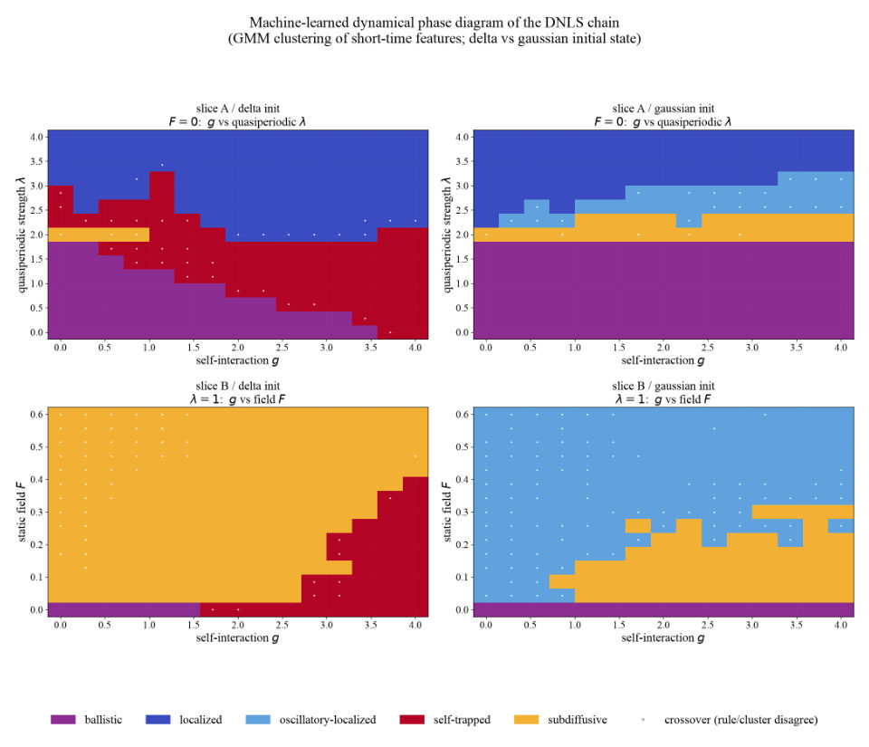
<figcaption class="paper-figure-caption"><b>Fig 2.</b> Figure 2: Machine-learned dynamical phase diagrams. Rows: slices A (F = 0, g vs. λ) and B (λ = 1, g vs. F). Columns: delta and Gaussian initial states. White dots mark crossover cells, where the per-point threshold rule disagrees with its cluster’s majority-vote name (Sec. 4.4).</figcaption>
</figure>
<figure class="paper-figure-card">
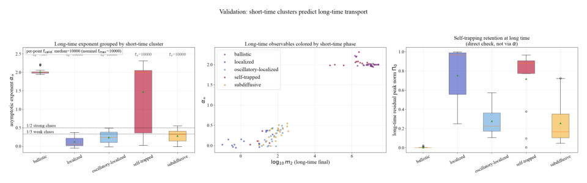
<figcaption class="paper-figure-caption"><b>Fig 3.</b> Figure 3: Validation against long-time ground truth. Left: asymptotic exponent α∞by short-time cluster (dashed lines mark the weak- and strong-chaos values 1/3 and 1/2; tv annotations give the median achieved tvalid per phase). Center: long-time (log10 m2, α∞) colored by short-time phase. Right: long-time residual peak norm Π0 by short-time cluster, the direct self-trapping check that does not rely on α∞.</figcaption>
</figure>
<figure class="paper-figure-card">
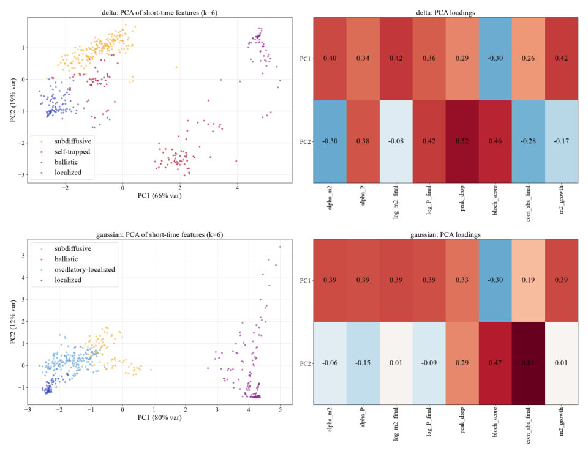
<figcaption class="paper-figure-caption"><b>Fig 4.</b> Figure 4: PCA of the standardized short-time feature matrix, by initial state (rows), with cluster identity colored (left) and PCA loadings (right).</figcaption>
</figure>
<figure class="paper-figure-card">

<figcaption class="paper-figure-caption"><b>Fig 5.</b> Figure 4 shows the first two principal components of the standardized feature matrix, which together capture most of its variance (66%+19% delta, 80%+12% gaussian). PC1 is dominated by the delocalization block (αm2, log m2, log P, growth) and PC2 by the retention/oscillation block (peak- drop, Bloch score, center-of-mass). The two physically independent axes, “how far/fast” and “what stayed behind”, emerge from the clustering without being hand-specified, even though the cluster names are (Sec. 4.4). The self-trapped cluster in the delta panel visibly splits into two PC1- separated clouds, the geometric signature of the α∞bimodality quantified in Sec. 5.3.</figcaption>
</figure>
</div>

<p><strong>Summary.</strong> This work maps the dynamical phase diagram of a nonlinear Schrödinger equation with quasiperiodic disorder using machine learning to overcome the computational bottleneck of long-time simulations. By clustering features from short runs, the authors identify five distinct transport regimes, demonstrating that the initial state significantly alters the resulting dynamics. This provides a powerful, efficient tool for characterizing complex quantum many-body systems.</p>
<p><strong>Why it may be interesting.</strong> The combination of nonlinear wave dynamics, quasiperiodic disorder (a hallmark of localization studies), and the use of ML for phase diagram construction is highly relevant to modern research in non-equilibrium quantum dynamics.</p>
<details>
<summary>Detailed structure</summary>
<p><strong>Main problem.</strong> The paper aims to map the complex dynamical phase diagram of a nonlinear wave equation subjected to both quasiperiodic disorder and a static field.</p>
<p><strong>Main result.</strong> Five distinct dynamical regimes (ballistic, localized, subdiffusive, etc.) are identified, and the study highlights the crucial role of initial state (delta vs. Gaussian) in determining the long-time dynamics.</p>
<p><strong>Method.</strong> It employs a machine-learning approach using Gaussian Mixture Models (GMM) on features extracted from numerous short-time simulations to rapidly partition the high-dimensional parameter space.</p>
<p><strong>Model / system.</strong> The system is governed by the one-dimensional discrete nonlinear Schrödinger (Gross-Pitaevskii) equation, incorporating a quasiperiodic Aubry-André potential and a static (Stark) field.</p>
<p><strong>Key observables.</strong> Spreading exponent ($\alpha_\infty$), long-time residual peak norm ($\Pi_0$), second moment ($m_2$), and various cluster-derived dynamical features.</p>
<p><strong>Important parameters / regimes.</strong> Self-interaction strength ($g$), static field ($F$), and quasiperiodic strength ($\lambda$).</p>
<p><strong>Assumptions / limitations.</strong> The physical regimes are assigned labels based on hand-calibrated rules applied to the unsupervised clustering results, and the method relies on short-time simulations predicting long-time asymptotics.</p>
<p><strong>Figures summary.</strong> Figures illustrate space-time density portraits and corresponding $m_2(t)$ curves for representative dynamics across the identified regimes, validating the short-time predictions against long-time behavior.</p>
<p><strong>Paper structure.</strong> The paper introduces the physical model and the computational challenge, details the ML-assisted feature extraction and clustering methodology, presents the resulting phase maps for different initial states, and validates the identified regimes against long-time simulations.</p>
</details>
<details>
<summary>Abstract</summary>
<p>We map the transport regimes of a wave packet evolving under the one-dimensional discrete nonlinear Schrödinger (Gross-Pitaevskii) equation with a quasiperiodic Aubry-André potential and a static (Stark) field, as a function of self-interaction $g$, field $F$, and quasiperiodic strength $λ$, for two initial states (delta and Gaussian). Instead of one expensive long-time simulation per grid point, we run 3600 short simulations, reduce each to eight dynamical features, and cluster parameter space with a Gaussian mixture model. Clustering finds the boundaries between regimes unsupervised; each cluster's name is then assigned by a hand-calibrated rule, and an ablation shows clustering measurably smooths those boundaries rather than merely relabeling them. The five resulting regimes (ballistic, localized, oscillatory-localized, subdiffusive, and self-trapped) are validated against 100 long runs on a lattice eight times larger than the short sweep, so the validation window is longer than the training window even for the fastest-spreading regime. The short-time clusters predict the long-time asymptotic spreading exponent ($α_\infty = 2.01\pm0.07$ ballistic, $0.28\pm0.16$ subdiffusive, consistent with the weak-chaos prediction $α=1/3$) and, independently, a long-time retention $Π_0=0.72\pm0.32$ for the self-trapped cluster, whose exponent alone is not diagnostic. The initial-state contrast is striking: the delta state develops a broad self-trapping wedge (onset at $g=3.907\pm0.017$ at $λ=0$) that invades the ballistic and localized regions as $g$ grows, while the Gaussian state shows no self-trapping, instead opening a subdiffusive corridor along the Aubry-André critical line that widens with $g$. The scheme yields a full $15\times15$ phase map in minutes per slice, where direct asymptotic simulation ($t\gtrsim10^6$ per point) is prohibitive.</p>
</details>
<p><sub><a href="#top">↑ back to top</a></sub></p>

<p><a id="paper-2609.09988"></a></p>
<h3 id="efficient-protocol-for-the-markovian-mpemba-effect-in-math288math-level-systems"><a href="http://arxiv.org/abs/2609.09988v1">Efficient protocol for the Markovian Mpemba effect in $N$-level systems</a></h3>
<p><strong>Authors:</strong> David Gelbwaser-Klimovsky<br>
<strong>Type:</strong> theory · <strong>Category:</strong> statistical mechanics · <strong>PDF:</strong> <a href="https://arxiv.org/pdf/2609.09988v1">https://arxiv.org/pdf/2609.09988v1</a><br>
<strong>Analysis basis:</strong> full PDF text, analyzed in chunks
<strong>Topic relevance:</strong> <code>driven-dissipative phase transition</code> <strong>3/5</strong> · <code>non-equilibrium universality</code> <strong>3/5</strong> · <code>methods for driven-dissipative</code> <strong>2/5</strong> · <code>scars &amp; prethermalization</code> <strong>2/5</strong> · <code>Keldysh / 2PI / non-Gaussian methods</code> <strong>1/5</strong> · <code>analog quantum simulation</code> <strong>1/5</strong> · <code>correlated / nonlocal dissipation</code> <strong>1/5</strong> · <code>quantum measurements</code> <strong>1/5</strong></p>
<div class="figure-strip-hint">↔ Scroll figures horizontally</div>
<div class="paper-figures-scroll">
<figure class="paper-figure-card">
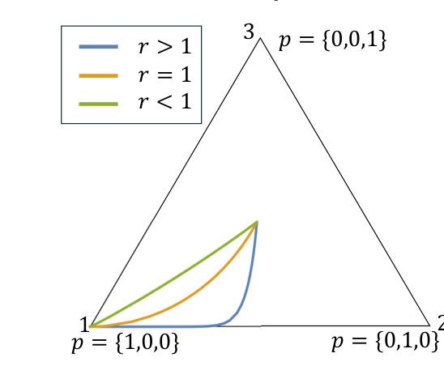
<figcaption class="paper-figure-caption"><b>Fig 1.</b> FIG. 1. Each point inside the triangle represents a state of the 3LS population, {p1, p2, p3}. The corners are pure states of levels 1, 2 or 3, respectively. The thermal states are repre- sented by one of the color lines, whose shape depends on the energy level distribution through r.</figcaption>
</figure>
<figure class="paper-figure-card">

<figcaption class="paper-figure-caption"><b>Fig 2.</b> FIG. 2. Probability for N-level Markovian Mpemba effect as a function of the normalized bath inverse temperature. We considered bounded values of transition rates (0 &lt; aij &lt; 1). As shown in the plot, the probability decreases with bath tem- perature. 3-, 4-, and 5-level systems are shown in the figure. The convergence of the results was assessed by increasing the number of realizations and confirming that this did not signif- icantly alter the plot. For the transition rates, we considered values from 0.001 to 1 and for βbϵi from 0 to 5N. Each point in the graphs is based in 106 random realizations.</figcaption>
</figure>
<figure class="paper-figure-card">
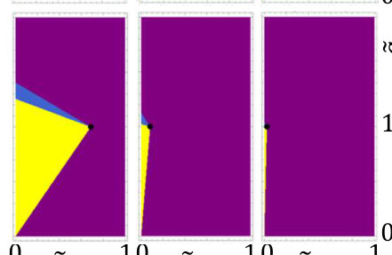
<figcaption class="paper-figure-caption"><b>Fig 3.</b> FIG. 4. Markovian Mpemba effect for the lowest three hydrogen-like energy levels, r &lt; 1, as a function of the normal- ized transition rates. The upper plots show the area (in dark blue) of Mechanism 4, the only mechanism for the Markovian Mpemba effect for r &lt; 1. The bottom plots show the region of the inverse Markovian Mpemba effect (yellow) and the direct Markovian Mpemba effect (blue). Each plot column corre- sponds to a different βb. See Figure 3 for other details of the color coding. The energy levels are (arbitrary units): -5,-5/4,- 5/9.</figcaption>
</figure>
<figure class="paper-figure-card">
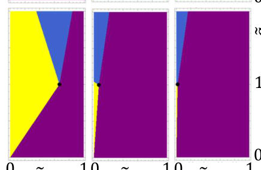
<figcaption class="paper-figure-caption"><b>Fig 4.</b> FIG. 3. Markovian Mpemba effect for the lowest three rota- tional energy levels, r &gt; 1, as a function of the normalized transition rates. The upper plots show the different mecha- nisms: Mechanism 1 (red), Mechanism 2 (light orange), and Mechanism 3 (Dark orange). The lower plots show the regions of the inverse (yellow) and direct (blue) Markovian Mpemba effect. In all plots, the purple regions correspond to parame- ter values without the Markovian Mpemba effect, and a black point represents the singular point. Each plot column corre- sponds to a different βb. The energy levels are 2, 6 and 12 (in arbitrary units).</figcaption>
</figure>
<figure class="paper-figure-card">

<figcaption class="paper-figure-caption"><b>Fig 5.</b> FIG. 5. Probability of a 4-level system exhibiting the Marko- vian Mpemba effect as a function of how many of its triplets exhibit any of the 3LS Markovian Mpemba mechanisms. No- tice that even in the case that all the triplets keep one of the 3LS mechanisms, the 4-level system may not exhibit the Markovian Mpemba effect. In this case, the probability is ∼93%. The convergence of the results was assessed by in- creasing the number of realizations and confirming that this did not significantly alter the plot. For the transition rates, we considered values from 0.001 to 1 and for βbϵi from 0 to 5. 5 × 105 realizations were used for the whole plot.</figcaption>
</figure>
</div>

<p><strong>Summary.</strong> This paper provides a comprehensive theoretical framework to understand the Markovian Mpemba effect in $N$-level quantum systems. By first solving the problem for three-level systems, the authors develop an efficient protocol to predict the conditions required for the effect in larger systems. This work advances the understanding of non-monotonic thermalization dynamics in quantum matter.</p>
<p><strong>Why it may be interesting.</strong> The Mpemba effect is a non-monotonic thermalization anomaly, making this work highly relevant to non-equilibrium statistical mechanics and the study of relaxation dynamics in open quantum systems.</p>
<details>
<summary>Detailed structure</summary>
<p><strong>Main problem.</strong> The paper investigates the necessary and sufficient conditions for the Markovian Mpemba effect in general $N$-level quantum systems.</p>
<p><strong>Main result.</strong> The authors derive specific conditions for 3-level systems and propose an efficient Single Pair of States Deviation (SPSD) protocol to determine parameters for the effect in larger $N$-level systems.</p>
<p><strong>Method.</strong> The analysis uses the Pauli rate equation, eigenvalue analysis of the transition matrix, and develops a systematic protocol based on analyzing low-dimensional subsystems (triplets).</p>
<p><strong>Model / system.</strong> The study focuses on $N$-level quantum systems undergoing thermalization, modeled by the Pauli rate equation ($\dot{P} = MP$). Initial analysis is performed on three-level systems (3LSs) to establish general criteria.</p>
<p><strong>Key observables.</strong> The existence and nature (direct vs. inverse) of the Markovian Mpemba effect, diagnosed via the eigenvalues and eigenvectors of the transition matrix.</p>
<p><strong>Important parameters / regimes.</strong> The bath inverse temperature ($eta_b$), energy level spacing ratios ($r$), and renormalized transition rates ($ ilde{a}<em 13>{23},   ilde{a}</em>$).</p>
<p><strong>Assumptions / limitations.</strong> The analysis relies on the Markovian approximation and assumes detailed balance for the transition rates.</p>
<p><strong>Figures summary.</strong> Figures illustrate the population state locus in 3LSs, plot the probability of the Mpemba effect versus bath temperature for $N=3, 4, 5$, and show success rates for the SPSD protocol as a function of $eta_b$.</p>
<p><strong>Paper structure.</strong> The paper first establishes necessary and sufficient conditions for 3LSs using geometric and spectral analysis. It then generalizes this understanding by developing the SPSD protocol to efficiently map the parameter space for arbitrary $N$-level systems, showing the dependence on temperature.</p>
</details>
<details>
<summary>Abstract</summary>
<p>The Mpemba effect is an anomalous phenomenon in which the time to thermalize does not depend monotonically on the distance from equilibrium, allowing systems with an initially larger temperature difference to thermalize before those with a smaller one. The rarity of the effect makes it hard to find parameters that produce it, complicating the design of experiments and the development of applications. Here, we find necessary and sufficient conditions for the Markovian Mpemba effect in three-level systems and explain its underlying physical mechanisms. Based on our understanding of the three-level case, we develop an efficient algorithm to determine the parameters for the effect in $N$-level systems. This protocol could open the door for the realization of Mpemba experiments and related applications in large systems.</p>
</details>
<p><sub><a href="#top">↑ back to top</a></sub></p>

<p><a id="paper-2609.09939"></a></p>
<h3 id="image-recognition-based-on-optical-spike-processing-with-exciton-polaritons"><a href="http://arxiv.org/abs/2609.09939v1">Image recognition based on optical spike processing with exciton-polaritons</a></h3>
<p><strong>Authors:</strong> Olgierd Jeziorski, Jakub Rogala, Krzysztof Tyszka<br>
<strong>Type:</strong> both · <strong>Category:</strong> disordered systems and neural networks · <strong>PDF:</strong> <a href="https://arxiv.org/pdf/2609.09939v1">https://arxiv.org/pdf/2609.09939v1</a><br>
<strong>Analysis basis:</strong> full PDF text, analyzed in chunks
<strong>Topic relevance:</strong> <code>analog quantum simulation</code> <strong>3/5</strong> · <code>driven-dissipative phase transition</code> <strong>3/5</strong> · <code>methods for driven-dissipative</code> <strong>3/5</strong> · <code>Keldysh / 2PI / non-Gaussian methods</code> <strong>1/5</strong> · <code>Tavis-Cummings &amp; cavity-many-emitter</code> <strong>1/5</strong> · <code>correlated / nonlocal dissipation</code> <strong>1/5</strong> · <code>non-equilibrium universality</code> <strong>1/5</strong> · <code>quantum optics experiment</code> <strong>1/5</strong></p>
<div class="figure-strip-hint">↔ Scroll figures horizontally</div>
<div class="paper-figures-scroll">
<figure class="paper-figure-card">
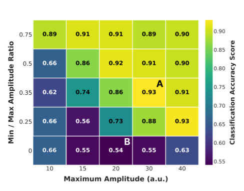
<figcaption class="paper-figure-caption"><b>Fig 1.</b> Fig. 1 shows a diagonal region of optimal performance. Performance degrades outside this regime due to two failure modes:</figcaption>
</figure>
<figure class="paper-figure-card">
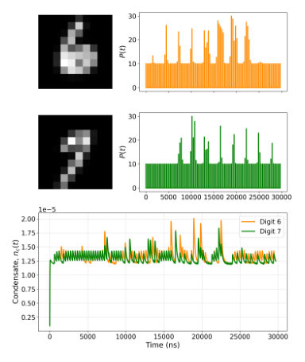
<figcaption class="paper-figure-caption"><b>Fig 2.</b> Fig. 6 compares the classification accuracy across four distinct models: a base linear model trained on raw pixels, a model using pure condensate features, a combined model using condensate features concatenated with raw pixels, and a Feed-Forward Network (FFN). In the combined model, the N-dimensional temporal feature vector extracted from the condensate is concatenated directly with the original M-dimensional raw pixel array, extending the</figcaption>
</figure>
<figure class="paper-figure-card">
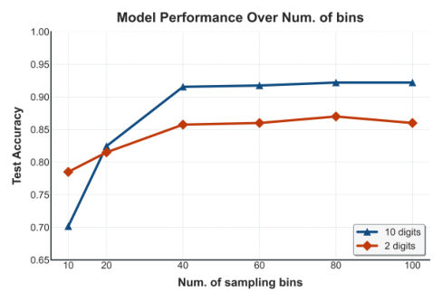
<figcaption class="paper-figure-caption"><b>Fig 3.</b> Fig. 9 illustrates the classification performance when raw pixel data is combined with the condensate features. Re- markably, the accuracy remains stable and high across all tested values of N for both the 10-digit and 2-digit tasks. This highlights a critical practical advantage: while capturing the fine details of standalone linear processing requires high temporal resolution, the most beneficial nonlinear processing occurs over longer, macroscopic timescales. As a result, the system can utilize the condensate’s powerful nonlinear pro-</figcaption>
</figure>
</div>

<p><strong>Summary.</strong> This study demonstrates the use of exciton-polariton condensates as a platform for optical neuromorphic computing, achieving image recognition on MNIST. By encoding images into the temporal dynamics of the condensate, the system extracts nonlinear features that significantly boost classification accuracy when combined with raw pixel data. This confirms the potential of polariton dynamics for ultrafast optical information processing.</p>
<p><strong>Why it may be interesting.</strong> This work directly applies nonlinear, many-body physics (exciton-polaritons) to a machine learning task, demonstrating how inherent nonlinear dynamics can act as a feature extractor, which is highly relevant to open quantum systems and nonlinear optics.</p>
<details>
<summary>Detailed structure</summary>
<p><strong>Main problem.</strong> The paper addresses the need for fully optical, energy-efficient, and fast neuromorphic computing systems capable of performing image recognition.</p>
<p><strong>Main result.</strong> By encoding MNIST images into optical pulse sequences, the exciton-polariton condensate dynamics achieved 93.2% accuracy when combining condensate features with raw pixel data, outperforming linear baselines.</p>
<p><strong>Method.</strong> The MNIST dataset is encoded into a time-domain pump function $P(t)$, and the resulting nonlinear dynamics of the condensate are sampled and processed by a linear classifier.</p>
<p><strong>Model / system.</strong> The physical system is an exciton-polariton condensate governed by coupled ODEs describing condensate, active reservoir, and inactive reservoir populations. The dynamics are analyzed across optimal, under-stimulated, and saturated regimes.</p>
<p><strong>Key observables.</strong> Classification accuracy (e.g., 92.2% baseline, 93.2% combined), condensate density $n_C(t)$, and the temporal evolution of the system variables.</p>
<p><strong>Important parameters / regimes.</strong> Optimal operating parameters include $\Delta t \approx 30 	ext{ ps}$ and pulse width $\approx 5 	ext{ ps}$. The analysis distinguishes between optimal, under-stimulated, and saturated regimes.</p>
<p><strong>Assumptions / limitations.</strong> The analysis uses a single-mode approximation, neglecting spatial variations, and relies on mapping pixel intensities to time-domain pump pulses.</p>
<p><strong>Figures summary.</strong> Figures illustrate the dynamics in different operational regimes (optimal vs. under-stimulated) and compare classification accuracy across four models (raw pixels, pure condensate, combined, FFN) against varying sampling resolutions ($N$).</p>
<p><strong>Paper structure.</strong> The paper first introduces the physical model and the encoding of image data into temporal pulses. It then analyzes the system's performance across different operational regimes, demonstrating the nonlinear feature extraction capability, and concludes with quantitative comparisons of classification accuracy.</p>
</details>
<details>
<summary>Abstract</summary>
<p>Exciton-polariton condensates combine ultrafast dynamics with strong optical nonlinearities, making them promising for optical neuromorphic computing. Here, we numerically demonstrate image recognition using the transient response of an exciton-polariton condensate. Downscaled MNIST images are encoded as optical pulse sequences, and the resulting condensate dynamics are sampled and processed by a linear classifier. For ten-class classification, condensate features achieve 92.2% accuracy, compared with 91.4% for raw-pixel linear classification. Combining both feature sets increases the accuracy to 93.2%. For the challenging binary classification of digits 7 and 9, the combined model reaches 97.3%, exceeding both the linear (95.5%) and feed-forward neural-network (96.6%) baselines. These results demonstrate that polariton dynamics can extract useful nonlinear features for ultrafast optical information processing.</p>
</details>
<p><sub><a href="#top">↑ back to top</a></sub></p>

<p><a id="paper-2609.09738"></a></p>
<h3 id="intermittent-continuous-time-random-walks-under-renewal-reset-mechanism"><a href="http://arxiv.org/abs/2609.09738v1">Intermittent continuous-time random walks under renewal reset mechanism</a></h3>
<p><strong>Authors:</strong> Guohua Li, Hong Zhang, Yuexiong Liu<br>
<strong>Type:</strong> theory · <strong>Category:</strong> statistical mechanics · <strong>PDF:</strong> <a href="https://arxiv.org/pdf/2609.09738v1">https://arxiv.org/pdf/2609.09738v1</a><br>
<strong>Analysis basis:</strong> full PDF text, analyzed in chunks
<strong>Topic relevance:</strong> <code>driven-dissipative phase transition</code> <strong>3/5</strong> · <code>non-equilibrium universality</code> <strong>3/5</strong> · <code>Keldysh / 2PI / non-Gaussian methods</code> <strong>2/5</strong> · <code>methods for driven-dissipative</code> <strong>2/5</strong> · <code>analog quantum simulation</code> <strong>1/5</strong> · <code>correlated / nonlocal dissipation</code> <strong>1/5</strong> · <code>quantum measurements</code> <strong>1/5</strong> · <code>scars &amp; prethermalization</code> <strong>1/5</strong></p>
<div class="figure-strip-hint">↔ Scroll figures horizontally</div>
<div class="paper-figures-scroll">
<figure class="paper-figure-card">
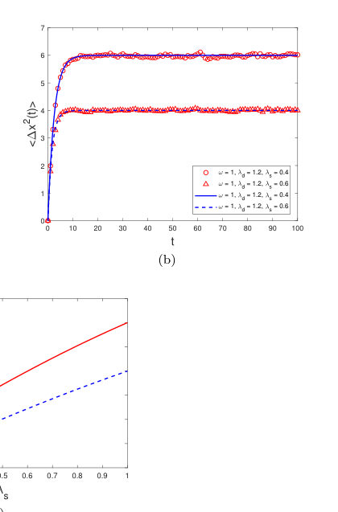
<figcaption class="paper-figure-caption"><b>Fig 1.</b> Figure 1: Results of Monte-Carlo simulations (symbols) versus the analytical solutions (solid curves) for the shape (78) of the stationary state (removed the last item containing the generalized function δ(x)) in panel (a) and the MSDs (79) in panel (b) for the intermittent CTRWs with exponential distributed jump length (67) for the exponential jump and reset WTDs (29). The simulation results were plotted at the diffusion time t = 100 (including simulation for the shape of the stationary state) and averaged over N = 105 trajectories of the particles. In panel (c) the analytical results of MFAT (81) at the target position x0 = 5 as the parameter λs varies to show the existence of its minimum...</figcaption>
</figure>
<figure class="paper-figure-card">
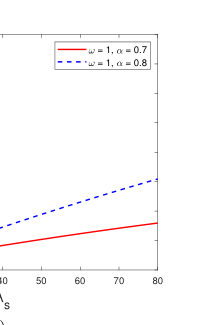
<figcaption class="paper-figure-caption"><b>Fig 2.</b> Figure 2: The analytical solutions for the shape (84) of the stationary state (removed the last item containing the generalized function δ(x)) in panel (a) and the MSDs (85) in panel (b) for the intermittent CTRWs with power-law jump WTD and exponential reset WTD. In panel (c) the analytical results of MFAT (88) at the target position x0 = 8 as the reset parameter λs varies. The values of relevant model parameters are provided in the legend.</figcaption>
</figure>
<figure class="paper-figure-card">
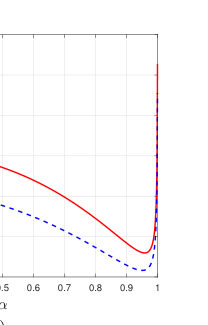
<figcaption class="paper-figure-caption"><b>Fig 3.</b> Figure 3: The distribution in non-equilibrium stationary state (90)(removed the last item con- taining the generalized function δ(x)) in panel (a) and the MSDs (91) in panel (b) for the intermittent CTRWs with power-law reset WTD. In panel (c) the analytical results of MFAT (93) at the target position x0 = 5 as the reset power-law distribution exponent α varies. The values of relevant model parameters are provided in the legend.</figcaption>
</figure>
<figure class="paper-figure-card">

<figcaption class="paper-figure-caption"><b>Fig 4.</b> Figure 4: The stationary distribution (95) in panel (a) and the MSD (96) in panel (b) of the intermittent CTRW with the power-law jump and reset WTDs. The values of relevant model parameters are provided in the legend.</figcaption>
</figure>
<figure class="paper-figure-card">
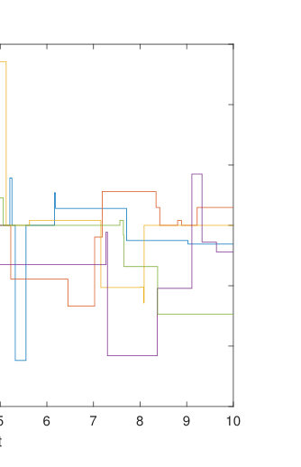
<figcaption class="paper-figure-caption"><b>Fig 5.</b> Figure 5: The particle trajectories of intermittent CTRW under stochastic resetting to original position. The exponential jump and reset WTDs with frequency parameters λd = 1.2 and λs = 0.4 individually and the Gaussian distributed jump length with standard deviation σ = 1.</figcaption>
</figure>
</div>

<p><strong>Summary.</strong> This paper develops a theoretical model for intermittent Continuous-Time Random Walks incorporating a renewal reset mechanism based on the minimum of jump and reset waiting times. It analyzes the system's statistical properties, proving the existence of non-equilibrium steady states and quantifying search efficiency via the Mean First-Arrival Time. The results provide a refined understanding of anomalous diffusion in complex environments compared to standard resetting models.</p>
<p><strong>Why it may be interesting.</strong> The mathematical framework for analyzing non-equilibrium dynamics, especially the derivation of generalized Montroll-Weiss equations and the study of anomalous diffusion via CTRWs, is highly relevant to open quantum systems and non-equilibrium statistical mechanics.</p>
<details>
<summary>Detailed structure</summary>
<p><strong>Main problem.</strong> The paper investigates efficient search strategies in complex and disordered environments by modeling intermittent continuous-time random walks (CTRWs) under a renewal reset mechanism.</p>
<p><strong>Main result.</strong> The model proves the existence of non-equilibrium stationary states and calculates the Mean First-Arrival Time (MFAT), showing it is finite for several combinations of exponential/power-law waiting time distributions, but diverges for power-law jump and reset WTDs.</p>
<p><strong>Method.</strong> The analysis involves deriving and solving the governing equation and Montroll-Weiss equation for the intermittent CTRWs in both Laplace and Fourier space.</p>
<p><strong>Model / system.</strong> The system is an intermittent CTRW where the next event (jump or reset) is governed by the minimum of two independent waiting times ($  au = \min{ au_d,   au_s}$), representing a competition mechanism.</p>
<p><strong>Key observables.</strong> Mean Square Displacements (MSDs), Mean First-Arrival Time (MFAT), and the stationary probability density function.</p>
<p><strong>Important parameters / regimes.</strong> The distributions of the jump waiting times ($\psi_d(t)$) and reset waiting times ($\psi_s(t)$), including exponential and power-law forms.</p>
<p><strong>Assumptions / limitations.</strong> The renewal event depends on the minimum of the jump and reset waiting times, and the model is compared against traditional independent resetting models.</p>
<p><strong>Figures summary.</strong> Figures illustrate the PDF of particles at the stationary state and the MSDs for intermittent CTRWs, particularly when power-law reset WTDs are involved.</p>
<p><strong>Paper structure.</strong> The paper details the model formulation, derives the governing equations (including the Montroll-Weiss equation), analyzes the stationary state and MSDs for various distributions (exponential/Gaussian), and concludes with the MFAT analysis and physical applications.</p>
</details>
<details>
<summary>Abstract</summary>
<p>Stochastic resetting as a practical and efficient search strategy in complex and disordered environments has long been a topic of interest to researchers. Based on the competition between jumping and resetting, this article proposes and investigates intermittent continuous-time random walks (CTRWs) under stochastic resetting, using the smaller waiting time for jump and reset as the renewal time, where the waiting times for both jump and reset can have arbitrary distributions. After each renewal event, the system will proceed with new waiting times for jump and reset regardless of their previous histories. We study the governing equation and Montroll-Weiss equation with renewal resetting, as well as the Markovian resetting for intermittent CTRWs. We prove the existence of non-equilibrium stationary states within the renewal reset mechanism when the jump and reset waiting times follow any exponential and power law distributions. For exponential and Gaussian distributed jump lengths, we examine the mean square displacements (MSDs) of particles to determine their monotonicity and asymptotic stability. Moreover, we calculate the first-arrival time to quantify search efficiency, and validate the intermittent CTRWs under renewal resetting lead to a finite mean first-arrival time (MFAT) to any fixed position for exponential jump and reset waiting time distributions (WTDs), power-law jump and exponential reset WTDs, as well as exponential jump and power-law reset WTDs. However, the MFAT diverges for power-law jump and reset WTDs. The intermittent CTRW model, which is based on the competition mechanism, can be applied to many physical scenarios, such as the foraging strategy of animals that return to their nests after an unsuccessful foraging attempt, or the work planning of intelligent robots that return to energy replenishment points after prolonged operation.</p>
</details>
<p><sub><a href="#top">↑ back to top</a></sub></p>

<p><a id="paper-2609.09500"></a></p>
<h3 id="topological-instability-and-reentrant-crystallization-in-active-solids"><a href="http://arxiv.org/abs/2609.09500v1">Topological instability and reentrant crystallization in active solids</a></h3>
<p><strong>Authors:</strong> Zory Davoyan, Aditya Jha, Anton Souslov<br>
<strong>Type:</strong> theory · <strong>Category:</strong> statistical mechanics · <strong>PDF:</strong> <a href="https://arxiv.org/pdf/2609.09500v1">https://arxiv.org/pdf/2609.09500v1</a><br>
<strong>Analysis basis:</strong> full PDF text, analyzed in chunks
<strong>Topic relevance:</strong> <code>driven-dissipative phase transition</code> <strong>3/5</strong> · <code>non-equilibrium universality</code> <strong>3/5</strong> · <code>Keldysh / 2PI / non-Gaussian methods</code> <strong>2/5</strong> · <code>methods for driven-dissipative</code> <strong>2/5</strong> · <code>Frenkel-Kontorova</code> <strong>1/5</strong> · <code>analog quantum simulation</code> <strong>1/5</strong> · <code>correlated / nonlocal dissipation</code> <strong>1/5</strong></p>
<div class="figure-strip-hint">↔ Scroll figures horizontally</div>
<div class="paper-figures-scroll">
<figure class="paper-figure-card">
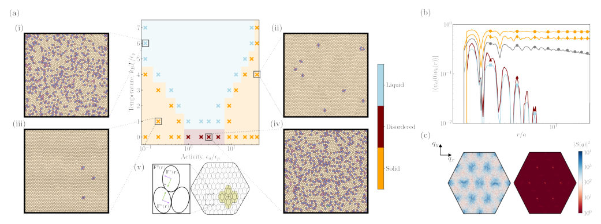
<figcaption class="paper-figure-caption"><b>Fig 1.</b> FIG. 1. (a) Numerical phase diagram of the odd Cosserat solid. The activity is defined as the ratio between the strengths of the microscopic nonconservative and conservative forces, ϵa and ϵp, respectively. The molecular dynamics simulations were performed for a total of 104 particles interacting with conservative Gay-Berne forces with an aspect ratio of ∼1.2. Activity was introduced through nonconservative pairwise chiral forces with spherical symmetry. Further details of the simulation procedure are given in End Matter. (i)-(iv) Snapshots of Voronoi diagrams showing the prevalence of blue (7-fold) and red (5-fold) defects for various values of activity and temperature. (v) Schematic of...</figcaption>
</figure>
<figure class="paper-figure-card">
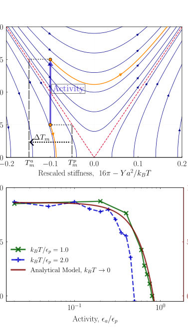
<figcaption class="paper-figure-caption"><b>Fig 2.</b> FIG. 2. (a) Renormalization group flow of the active Cosserat solid to linear order in activity. The active stresses provide a tuning parameter for the bare defect fugacity driving melt- ing transitions at otherwise stable parameter values. (b) A comparison of the analytical core energy and the rate of de- fect creation in simulations. Each data point is the average number of defects, N, observed over 104 simulation time steps and N0 is the number of defects observed at the spontaneous destabilization point. The expression for the analytical model is the zero-temperature limit −α2(log ma/2 + ˜γ) + C. C is a constant such that the core energy at ϵa/ϵp = 0 coincides with the numerical values,...</figcaption>
</figure>
</div>

<p><strong>Summary.</strong> This work develops a theoretical framework to describe melting in active solids by extending classical defect-mediated theories. It introduces the concept of 'topological instability' as a non-equilibrium melting route and predicts reentrant crystallization due to high activity. The findings are significant for understanding phase transitions in non-equilibrium matter.</p>
<p><strong>Why it may be interesting.</strong> The concept of topological instability driven by non-equilibrium forces provides a non-thermal mechanism for phase transitions, which has parallels in driven many-body systems studied in AMO physics.</p>
<details>
<summary>Detailed structure</summary>
<p><strong>Main problem.</strong> The paper investigates the melting mechanism in active solids, extending KTHNY theory to include non-reciprocal elasticity and micropolar coupling.</p>
<p><strong>Main result.</strong> It discovers a distinct melting mechanism called topological instability, and predicts reentrant crystallization at high activity where quasi-long-range order survives melting temperatures.</p>
<p><strong>Method.</strong> The study employs a combination of continuum field theory, Renormalization Group (RG) flow analysis, and molecular dynamics simulations.</p>
<p><strong>Model / system.</strong> The system is active solids, modeled using continuum theories incorporating non-reciprocal (odd) elasticity and Cosserat coupling, realized microscopically with particles subject to chiral and conservative forces.</p>
<p><strong>Key observables.</strong> Orientational correlation function ($\psi_6$), structure factor peaks, defect-pair fugacity, and renormalized elastic constants.</p>
<p><strong>Important parameters / regimes.</strong> Activity (ratio of nonconservative to conservative forces), non-reciprocity strength, and temperature ($T$).</p>
<p><strong>Assumptions / limitations.</strong> The continuum theory assumes isotropy at long length scales, and the analysis often relies on approximations like assuming fast relaxation of rotational degrees of freedom.</p>
<p><strong>Figures summary.</strong> Figures illustrate the phase diagram across different activity/temperature regimes, show RG flow of elastic constants, and compare structure factors for active versus passive force dominance.</p>
<p><strong>Paper structure.</strong> The paper builds from extending continuum elasticity theory to active solids, analyzing defect interactions via gauge theory, deriving RG flow equations for elastic moduli, and finally predicting the topological instability and reentrant crystallization.</p>
</details>
<details>
<summary>Abstract</summary>
<p>We extend the KTHNY theory of defect-mediated melting in two dimensions to the case of active solids exhibiting both non-reciprocal (odd) elasticity and Cosserat (micropolar) coupling. For perturbatively small values of non-reciprocity, melting still proceeds via defect unbinding, but the melting temperature shifts due to activity. However, at a threshold value of non-reciprocity, we discover a qualitatively distinct mechanism for 2D melting, which we call topological instability. This melting occurs through the proliferation of defect pairs at any temperature. We use a combination of field theory and simulations to characterize this zero-temperature transition in terms of the defect-pair fugacity. Surprisingly, for higher activity values, we find reentrant crystallization, where the quasi-long-range order survives even at temperatures for which the equilibrium crystal would melt. Although active solids present one realization of this topological instability, we envision core-energy-driven defect proliferation as a generic and unexplored route for two-dimensional melting.</p>
</details>
<p><sub><a href="#top">↑ back to top</a></sub></p>

<p><a id="paper-2609.09593"></a></p>
<h3 id="energy-transport-structure-and-fluctuation-theorem-in-nonreciprocal-harmonic-chains"><a href="http://arxiv.org/abs/2609.09593v1">Energy Transport Structure and Fluctuation Theorem in Nonreciprocal Harmonic Chains</a></h3>
<p><strong>Authors:</strong> Ziwei Cheng, Geng Li, Zhanchun Tu<br>
<strong>Type:</strong> theory · <strong>Category:</strong> statistical mechanics · <strong>PDF:</strong> <a href="https://arxiv.org/pdf/2609.09593v1">https://arxiv.org/pdf/2609.09593v1</a><br>
<strong>Analysis basis:</strong> full PDF text, analyzed in chunks
<strong>Topic relevance:</strong> <code>non-equilibrium universality</code> <strong>3/5</strong> · <code>Full counting statistics</code> <strong>2/5</strong> · <code>Keldysh / 2PI / non-Gaussian methods</code> <strong>2/5</strong> · <code>driven-dissipative phase transition</code> <strong>2/5</strong> · <code>Frenkel-Kontorova</code> <strong>1/5</strong> · <code>correlated / nonlocal dissipation</code> <strong>1/5</strong> · <code>methods for driven-dissipative</code> <strong>1/5</strong></p>
<div class="figure-strip-hint">↔ Scroll figures horizontally</div>
<div class="paper-figures-scroll">
<figure class="paper-figure-card">
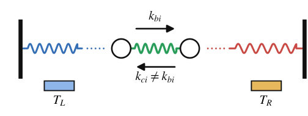
<figcaption class="paper-figure-caption"><b>Fig 1.</b> FIG. 1. Schematic of the nonreciprocal harmonic chain cou- pled to two thermal reservoirs at temperatures TL and TR. The chain consists of N particles with asymmetric nearest- neighbor couplings kbi and kci, where i = 1, 2, . . . , N −1. The couplings kbi and kci characterize the interactions in opposite directions. Nonreciprocity corresponds to kbi ̸= kci.</figcaption>
</figure>
<figure class="paper-figure-card">
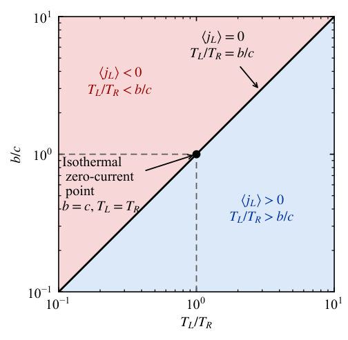
<figcaption class="paper-figure-caption"><b>Fig 2.</b> FIG. 2. Transport regimes in the parameter plane spanned by the temperature ratio TL/TR and the effective directional- coupling ratio b/c. The line TL/TR = b/c corresponds to ⟨jL⟩= ⟨jR⟩= 0 and separates the two regimes with opposite reservoir heat-current directions. The black dot at TL/TR = b/c = 1 denotes the isothermal zero-current point. It coin- cides with the reciprocal equilibrium state when kbi = kci for every bond.</figcaption>
</figure>
<figure class="paper-figure-card">
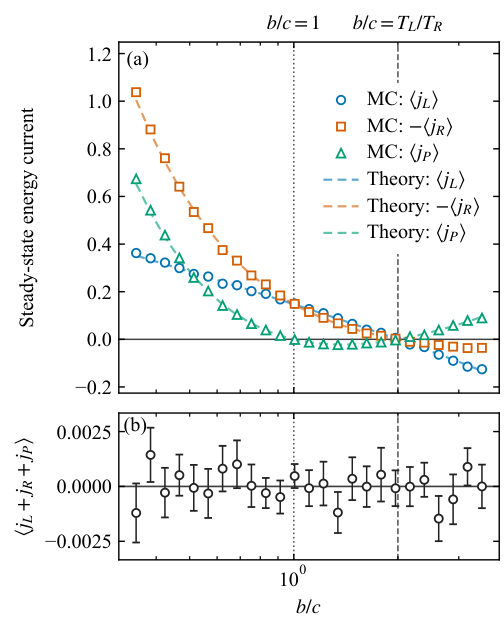
<figcaption class="paper-figure-caption"><b>Fig 3.</b> FIG. 3. Numerical verification of the analytical predic- tions for the steady-state energy transport in a three-particle nonreciprocal harmonic chain. Open symbols represent the ensemble-averaged steady-state energy currents obtained from Langevin Monte Carlo simulations, while the dashed curves denote the corresponding exact theoretical predic- tions. The upper panel compares the left heat current ⟨jL⟩, the opposite of the right heat current −⟨jR⟩, and the non- reciprocal power current ⟨jP ⟩as functions of the effective directional-coupling ratio b/c. The vertical dotted line in- dicates the transport-symmetric point b/c = 1, whereas the vertical dashed line marks the current-reversal...</figcaption>
</figure>
<figure class="paper-figure-card">
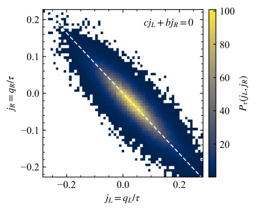
<figcaption class="paper-figure-caption"><b>Fig 4.</b> FIG. 4. Steady-state joint probability distribution Pτ(jL, jR) obtained from Langevin simulations. The probability density is concentrated around the transport manifold cjL + bjR = 0, in agreement with the analytical prediction.</figcaption>
</figure>
<figure class="paper-figure-card">

<figcaption class="paper-figure-caption"><b>Fig 5.</b> FIG. 5. Numerical verification of the projected fluctuation relation. The Monte Carlo results (symbols) are compared with the theoretical prediction line (dashed line).</figcaption>
</figure>
</div>

<p><strong>Summary.</strong> This work analyzes energy transport in harmonic chains with broken symmetry due to nonreciprocal couplings. It shows that heat flow depends on a competition between temperature bias and the intrinsic directional asymmetry, leading to a non-zero power current. Furthermore, it derives a joint fluctuation theorem, providing a comprehensive energetic and fluctuation framework for non-equilibrium heat control.</p>
<p><strong>Why it may be interesting.</strong> The explicit derivation of a joint fluctuation theorem for energy transport in a non-equilibrium setting, controlled by directional interactions, provides a powerful tool for understanding energy flow beyond simple thermal gradients.</p>
<details>
<summary>Detailed structure</summary>
<p><strong>Main problem.</strong> The paper investigates how nonreciprocal interactions fundamentally alter the structure of energy transport and the associated fluctuation theorems in harmonic chains.</p>
<p><strong>Main result.</strong> It establishes a unified framework showing that nonreciprocity introduces an additional power current and that the joint heat exchange obeys an exact Gallavotti-Cohen fluctuation symmetry.</p>
<p><strong>Method.</strong> The analysis employs Green-function techniques in the frequency domain, stochastic thermodynamics, and large deviation theory to derive steady-state currents and fluctuation relations.</p>
<p><strong>Model / system.</strong> The model is a one-dimensional harmonic chain subjected to asymmetric nearest-neighbor couplings, coupled to two thermal reservoirs at different temperatures.</p>
<p><strong>Key observables.</strong> Steady-state heat currents ($\langle j_L 
angle, \langle j_R 
angle$), the nonreciprocal power current ($\langle j_P 
angle$), and the joint scaled cumulant generating function.</p>
<p><strong>Important parameters / regimes.</strong> Temperature bias ($T_L/T_R$) and the effective directional asymmetry ratio ($b/c$).</p>
<p><strong>Assumptions / limitations.</strong> The analysis assumes harmonicity, one-dimensionality, and nearest-neighbor coupling; the fluctuation results rely on the large deviation principle.</p>
<p><strong>Figures summary.</strong> Figures illustrate the schematic setup, the dependence of heat flow direction on the competition between temperature ratio and coupling ratio, and the joint probability distribution of heat currents.</p>
<p><strong>Paper structure.</strong> The paper progresses from defining the nonreciprocal system and deriving the three-current energy balance ($\langle j_L 
angle + \langle j_R 
angle + \langle j_P 
angle = 0$), to analyzing the joint probability distribution, and finally deriving the joint Gallavotti-Cohen fluctuation relation.</p>
</details>
<details>
<summary>Abstract</summary>
<p>Nonreciprocal interactions fundamentally alter energy transport by breaking the symmetry between forward and backward responses. Here, we uncover an exact transport structure for a one-dimensional harmonic chain with asymmetric nearest-neighbor couplings. Using a Green-function approach, we demonstrate that the direction of heat transport is determined not solely by the temperature bias, but by its competition with an effective directional asymmetry. This competition can reverse the direction of heat flow, enabling cold-to-hot transport. We further show that nonreciprocity introduces an additional power channel associated with the antisymmetric sector of the interaction, leading to a generalized steady-state energy balance involving two reservoir heat currents and a nonreciprocal power current. At the fluctuation level, the heat exchanges with the two reservoirs constitute correlated yet distinct stochastic currents, whose joint scaled cumulant generating function obeys an exact Gallavotti-Cohen symmetry. Together, these results establish a unified energetic and fluctuation framework for nonreciprocal heat transport and demonstrate that directional interactions can serve as an active resource for controlling nonequilibrium energy flows.</p>
</details>
<p><sub><a href="#top">↑ back to top</a></sub></p>

<p><a id="paper-2609.09599"></a></p>
<h3 id="information-geometric-bounds-on-nonequilibrium-relaxation-in-quantum-markov-dynamics"><a href="http://arxiv.org/abs/2609.09599v1">Information-geometric bounds on nonequilibrium relaxation in quantum Markov dynamics</a></h3>
<p><strong>Authors:</strong> Xiao-Kan Guo, Zhiqiang Huang<br>
<strong>Type:</strong> theory · <strong>Category:</strong> statistical mechanics · <strong>PDF:</strong> <a href="https://arxiv.org/pdf/2609.09599v1">https://arxiv.org/pdf/2609.09599v1</a><br>
<strong>Analysis basis:</strong> full PDF text, analyzed in chunks
<strong>Topic relevance:</strong> <code>driven-dissipative phase transition</code> <strong>3/5</strong> · <code>non-equilibrium universality</code> <strong>3/5</strong> · <code>Keldysh / 2PI / non-Gaussian methods</code> <strong>2/5</strong> · <code>methods for driven-dissipative</code> <strong>2/5</strong> · <code>correlated / nonlocal dissipation</code> <strong>1/5</strong> · <code>quantum measurements</code> <strong>1/5</strong></p>
<div class="figure-strip-hint">↔ Scroll figures horizontally</div>
<div class="paper-figures-scroll">
<figure class="paper-figure-card">

<figcaption class="paper-figure-caption"><b>Fig 1.</b> FIG. 1. Exact identity on the qutrit: the definition-based di- rect extraction ξdirect Q (complex-step mixed fourth derivative)</figcaption>
</figure>
<figure class="paper-figure-card">

<figcaption class="paper-figure-caption"><b>Fig 2.</b> FIG. 4. Drive scaling: log ξ2 Q versus log σ∗for Ωd ∈[0.05, 1.2]</figcaption>
</figure>
<figure class="paper-figure-card">
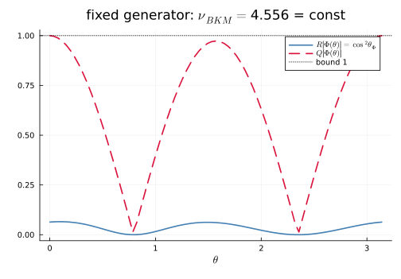
<figcaption class="paper-figure-caption"><b>Fig 3.</b> FIG. 2. Normalized ratio at fixed generator: R[Φ(θ)] = cos2 θΦ and Q[Φ(θ)] = 2|ξQ|/(ϵ2νBKM∥Φ∥2π) along the family con- necting the two eigendirections of [K‡, K] with eigenvalues ±νBKM; Q sweeps [0.013, 0.9999] while νBKM = 4.56 is con- stant.</figcaption>
</figure>
<figure class="paper-figure-card">
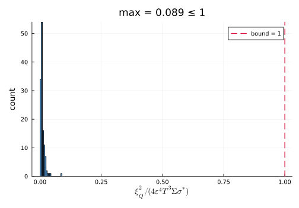
<figcaption class="paper-figure-caption"><b>Fig 4.</b> FIG. 3. Semiclassical entropy-production bound: his- togram of ξ2 Q/(4ϵ4T3Σ σ∗) over 128 perturbations of the two- dimensional anisotropic NESS; all values lie below 1 (maxi- mum 0.089).</figcaption>
</figure>
</div>

<p><strong>Summary.</strong> This work establishes a quantum information-geometric framework for analyzing how quantum systems relax away from equilibrium. It derives a precise formula for the nonequilibrium curvature correction, linking it to the commutator structure of the system's generator. The key achievement is deriving a quantitative bound that relates this quantum non-normality to the system's dissipative and transport activities.</p>
<p><strong>Why it may be interesting.</strong> It provides rigorous, information-geometric bounds on relaxation dynamics, connecting non-equilibrium thermodynamics (entropy production) directly to the underlying quantum dynamics structure (generator non-normality).</p>
<details>
<summary>Detailed structure</summary>
<p><strong>Main problem.</strong> The paper investigates the quantum information-geometric structure governing short-time nonequilibrium relaxation in quantum Markov dynamics.</p>
<p><strong>Main result.</strong> It derives an exact identity showing the nonequilibrium curvature correction is related to the commutator of the dissipative and transport parts of the generator, and establishes a quantitative Activity-current bound for this correction.</p>
<p><strong>Method.</strong> The analysis uses the von Neumann relative entropy as a quantum divergence, parameterizes perturbations via the Kubo-Mori map, and decomposes the induced generator into symmetric and antisymmetric parts.</p>
<p><strong>Model / system.</strong> The study is applied to Quantum Markov Semigroups (QMS) with a full-rank stationary state, tested on models including a noncommuting qubit and a driven-dissipative qutrit.</p>
<p><strong>Key observables.</strong> Nonequilibrium curvature correction ($\xi_Q$), BKM-symmetric/antisymmetric activities ($\Sigma_s, \Sigma_a$), and the steady-state entropy production rate ($\sigma_{ss}$).</p>
<p><strong>Important parameters / regimes.</strong> High-temperature and overdamped limits, the perturbation parameter $\epsilon$, and the temperature $T$.</p>
<p><strong>Assumptions / limitations.</strong> The analysis assumes the QMS has a full-rank stationary state and relies on the local quadratic structure of the relative entropy.</p>
<p><strong>Figures summary.</strong> Figures illustrate the agreement between different methods for extracting $\xi_Q$, show the variation of the bound ratio $Q[\Phi]$ while generator non-normality is constant, and confirm the bound holds for a 2D anisotropic NESS.</p>
<p><strong>Paper structure.</strong> The paper builds from generalizing classical relaxation inequalities to the quantum setting using the relative entropy, deriving the generator decomposition, establishing the commutator identity for $\xi_Q$, and finally proving the Activity-current bound, with appendices detailing the mathematical machinery.</p>
</details>
<details>
<summary>Abstract</summary>
<p>In this paper, we study the quantum information-geometric structure underlying short-time nonequilibrium relaxation in quantum Markov dynamics, and derive bounds on the nonequilibrium correction to the short-time relaxation curvature. These bounds generalize the information-geometric structure underlying Auconi's classical nonequilibrium relaxation inequality to quantum Markov dynamics. We consider the von Neumann relative entropy as quantum divergence, and parametrize perturbations through the Kubo-Mori map, which converts the second-order expansion of the relative entropy into the Bogoliubov-Kubo-Mori (BKM) inner product at all temperatures. For a quantum Markov semigroup with full-rank stationary state, the induced tangent-space generator admits a canonical decomposition into a BKM-symmetric and a BKM-antisymmetric part, and the leading nonequilibrium curvature correction takes the exact form of the expectation of the commutator between the dissipative and the transport part of the generator. This correction is bounded by the product of a BKM-symmetric dissipative activity and a transport-sector activity. The bound is verified on a noncommuting qubit model and a driven-dissipative qutrit, and the full chain is confirmed numerically on a two-dimensional Fokker-Planck steady state. In the high-temperature and overdamped limit the quantum formula reduces to the position-space Fokker-Planck expression and reproduces Auconi's entropy-production bound with the correct temperature factor.</p>
</details>
<p><sub><a href="#top">↑ back to top</a></sub></p>

<p><a id="paper-2609.09806"></a></p>
<h3 id="dynamic-observable-subspaces-fast-simulation-of-observable-quantum-dynamics"><a href="http://arxiv.org/abs/2609.09806v1">Dynamic Observable Subspaces: Fast Simulation of Observable Quantum Dynamics</a></h3>
<p><strong>Authors:</strong> Hannes Leipold<br>
<strong>Type:</strong> theory · <strong>Category:</strong> numerical methods · <strong>PDF:</strong> <a href="https://arxiv.org/pdf/2609.09806v1">https://arxiv.org/pdf/2609.09806v1</a><br>
<strong>Analysis basis:</strong> full PDF text, analyzed in chunks
<strong>Topic relevance:</strong> <code>methods for driven-dissipative</code> <strong>3/5</strong> · <code>Keldysh / 2PI / non-Gaussian methods</code> <strong>2/5</strong> · <code>analog quantum simulation</code> <strong>2/5</strong> · <code>driven-dissipative phase transition</code> <strong>2/5</strong> · <code>quantum measurements</code> <strong>1/5</strong></p>
<div class="figure-strip-hint">↔ Scroll figures horizontally</div>
<div class="paper-figures-scroll">
<figure class="paper-figure-card">

<figcaption class="paper-figure-caption"><b>Fig 1.</b> Figure 1: Observable Subspace of Quantum Dynamics. In the case that iO ∈g for observable O, the measurable dynamics of a quantum system are captured inside the Dynamic Lie Algebra g such that Tr (O ρ(T)) = Tr  O projg(ρ(T))  .</figcaption>
</figure>
<figure class="paper-figure-card">

<figcaption class="paper-figure-caption"><b>Fig 2.</b> Figure 2: Liouville von Neumann Dynamics in the Heisenberg Picture. In the skew Heisenberg picture, an observable iO evolves by a Hamiltonian H(t) = P</figcaption>
</figure>
<figure class="paper-figure-card">
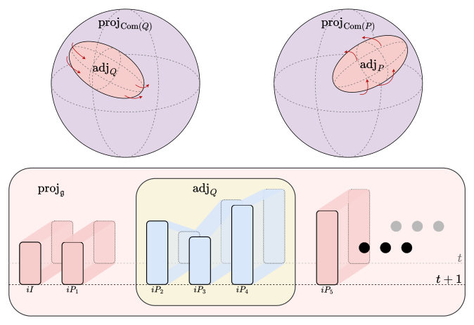
<figcaption class="paper-figure-caption"><b>Fig 3.</b> Figure 3: Dynamic Subspace of the Adjoint Operator. Top depicts the dynamic action of two adjoint operators adjiQ and adjiP with projCom(iQ) and projCom(iP ) as the outside space that is left stationary respectively. Bottom depicts eiθQ : ρ(t) →ρ(t + 1) where support inside proj⊥ Com(Q) colored blue is transformed while support outside (in projCom(iQ)) colored red is left stationary.</figcaption>
</figure>
<figure class="paper-figure-card">

<figcaption class="paper-figure-caption"><b>Fig 4.</b> Figure 4: Meeting of Schr¨odinger iρ(t) and Heisenberg iO(t) at time t. In the mixed Schr¨odinger Heisenberg picture, iρ(t) and iO(t) meet at time t through the action of generator Gt, allowing us to compute each entry ∂ ∂θt L = ⟨iϱ(t) Gt, iO(t) ⟩in a single pass of (reverse) evolving iϱ and iO.</figcaption>
</figure>
<figure class="paper-figure-card">

<figcaption class="paper-figure-caption"><b>Fig 5.</b> Figure 5: Decomposition into Multiple Dynamic Observable Subspaces. Given an observable O = v1 O1 + v2 O2 + v3 O3, we can define the DOS for each Oj and simulate them separately.</figcaption>
</figure>
</div>

<p><strong>Summary.</strong> This paper introduces the Dynamic Observable Subspace (DOS) method to efficiently simulate quantum dynamics by restricting the evolution to the subspace relevant for calculating specific observable expectation values. This approach allows for polynomial-time simulation, even for large systems, and provides a method to calculate gradients for variational algorithms that avoids the pitfalls of fully expressive quantum circuits. It offers a significant computational advantage for simulating complex quantum systems.</p>
<p><strong>Why it may be interesting.</strong> This provides a powerful, mathematically rigorous framework for making quantum simulations and VQA gradient calculations tractable by exploiting the structure of the observables of interest, which is highly relevant for simulating complex many-body dynamics.</p>
<details>
<summary>Detailed structure</summary>
<p><strong>Main problem.</strong> The paper addresses the challenge of simulating complex quantum dynamics and calculating gradients for variational quantum algorithms by restricting the dynamics to a low-dimensional subspace.</p>
<p><strong>Main result.</strong> By constructing the Dynamic Observable Subspace (DOS), the simulation of observable quantum dynamics can be performed in polynomial time, dramatically outperforming fully expressive circuits and avoiding the Barren Plateau.</p>
<p><strong>Method.</strong> The core method involves defining the DOS via recursive commutation relations and using projection operators to restrict the evolution of observables and density matrices to this subspace.</p>
<p><strong>Model / system.</strong> The work applies to general quantum systems whose dynamics are governed by unitaries and observables, demonstrated with examples like Pauli strings, diffusor mixers, and the TFXY Hamiltonian.</p>
<p><strong>Key observables.</strong> Expectation values of observables $O$, the gradient vector $
abla_   heta L$, and the projected density operator $
ho_{    ext{DOS}}(t)$.</p>
<p><strong>Important parameters / regimes.</strong> The size of the Dynamic Lie Algebra (DLA) and the number of time steps $L$ are critical for determining polynomial tractability.</p>
<p><strong>Assumptions / limitations.</strong> The method assumes the DLA is polynomial sized for the simulation to remain tractable, and that the relevant dynamics are captured within the DOS.</p>
<p><strong>Figures summary.</strong> Figures illustrate the construction of the Observable Subspace and the process of nested commutation defining the DOS.</p>
<p><strong>Paper structure.</strong> The paper builds conceptually from defining the DOS via Lie algebra decomposition, establishing theorems regarding the invariance and evolution within this subspace, and finally applying these tools to efficiently calculate gradients for time-dependent quantum circuits.</p>
</details>
<details>
<summary>Abstract</summary>
<p>By decomposing quantum dynamics across the Lie orbits of a list of observables, we find polynomial bounded classical simulations for the dynamics of the quantum system given a polynomial sized dynamic Lie algebra (DLA) for the generators of the quantum system. To do so, we describe how to construct the Dynamic Observable Subspace (DOS) that captures all the relevant dynamics for calculating expectation values for a specific observable for Pauli strings, diffusor mixers, and general local generators. Efficient sparse matrix representation, decoupling nonlinearity from such representation and basis construction with permissible pruning allows us to simulate the closed dynamics of such systems with hundreds of qubits. Moreover, we find that while restricted DOS circuits may not express the space of an associated Hamiltonian, they can dramatically outperform a fully expressive circuit due to the absence of the Barren Plateau. While classically simulatable, such circuits can still exhibit a form of quantum advantage through inference, act as warm starting for more expressive circuits, and find high quality trial states for Quantum Amplitude Amplification or Quantum Phase Estimation. In the simulation of quantum dynamics, we find that our restricted circuit can be simulated in polynomial time while producing high quality guiding state for downstream tasks like Quantum Phase Estimation with significantly lower energy than circuits with full expressivity.</p>
</details>
<p><sub><a href="#top">↑ back to top</a></sub></p>

<p><a id="paper-2609.09874"></a></p>
<h3 id="quantifying-cell-shape-and-density-fluctuations-in-epithelial-tissue-in-vivo"><a href="http://arxiv.org/abs/2609.09874v1">Quantifying cell shape and density fluctuations in epithelial tissue in vivo</a></h3>
<p><strong>Authors:</strong> Jake Turley, Helen Weavers, Paul Martin, Isaac V. Chenchiah, Tanniemola B. Liverpool<br>
<strong>Type:</strong> both · <strong>Category:</strong> statistical mechanics · <strong>PDF:</strong> <a href="https://arxiv.org/pdf/2609.09874v1">https://arxiv.org/pdf/2609.09874v1</a><br>
<strong>Analysis basis:</strong> full PDF text, analyzed in chunks
<strong>Topic relevance:</strong> <code>non-equilibrium universality</code> <strong>3/5</strong> · <code>Keldysh / 2PI / non-Gaussian methods</code> <strong>2/5</strong> · <code>methods for driven-dissipative</code> <strong>2/5</strong> · <code>Frenkel-Kontorova</code> <strong>1/5</strong> · <code>correlated / nonlocal dissipation</code> <strong>1/5</strong> · <code>driven-dissipative phase transition</code> <strong>1/5</strong></p>
<div class="figure-strip-hint">↔ Scroll figures horizontally</div>
<div class="paper-figures-scroll">
<figure class="paper-figure-card">
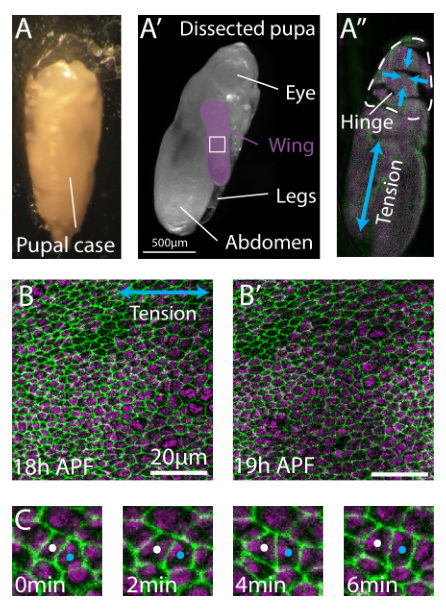
<figcaption class="paper-figure-caption"><b>Fig 1.</b> Figure 1. Drosophila pupal wing tissue and cell shape fluctuations. A) a pupa inside its puparium. A’) Bright field image of an 18hour APF (after puparium formation) pupa with the wing highlighted in magenta. B-B’) Snap shots from a movie of the epithelium at timepoints indicated. E- cadherin-GFP (green) shows cell boundaries and Histone2- RFP (red) labels cell nuclei. C) Epithelial cells with fluctu- ating boundaries over time.</figcaption>
</figure>
<figure class="paper-figure-card">

<figcaption class="paper-figure-caption"><b>Fig 2.</b> Figure 3. Mean of cell density and elongation over time. A) The mean ρ over time with orange shaded region, showing the standard deviation. B) The mean Q(1) over time with orange shaded region, showing the standard deviation.</figcaption>
</figure>
<figure class="paper-figure-card">
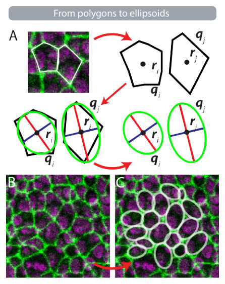
<figcaption class="paper-figure-caption"><b>Fig 3.</b> Figure 2. Epithelial cells as soft ellipsoids. A) Cell shapes can be approximated by polygons which we subsequently map to ellipses. Each ellipse can be assigned a position (geometric centre) as well as a long (red) and short (blue) axis computed via a q-tensor evaluated from the polygonal cell shape. B) Zoom in of wing tissue. E-cadherin-GFP (green) shows cell boundaries and Histone2-RFP (red) labels cell nuclei. A) Ep- ithelial cells with white overlay of ellipsoids.</figcaption>
</figure>
<figure class="paper-figure-card">

<figcaption class="paper-figure-caption"><b>Fig 4.</b> Figure 4. Spatio-temporal density correlations func- tions from experiments matches theoretical models predictions. A) Same time correlation, where R &gt; 0, separa- tion between cells is non-zero, but evaluated at the same same time point. B) Same position correlation, where the time in- terval between events is non-zero, T &gt; 0 but R = 0, position is fixed. C) Spatio-temporal correlation function diagram now varying both separation of positions R &gt; 0 and time-interval T &gt; 0. D) Heatmap of the space and time correlation of density fluctuations. Red regions indicate relatively high pos- itive correlation between the two properties and blue areas negative correlation. White parts of the map show...</figcaption>
</figure>
<figure class="paper-figure-card">

<figcaption class="paper-figure-caption"><b>Fig 5.</b> Figure 5. Fitting model parameters to correlation of cell shape. Correlations of cell shape for A, B) δQ(1) and C, D) δQ(2) for fixed T and R respectively. Graphs show the ex- perimental data (blue), fitted parameters for individual cases (green), model using averaged parameters (orange) and the standard deviation of the averaged model parameters (gray).</figcaption>
</figure>
</div>

<p><strong>Summary.</strong> This work develops a theoretical framework to model cell shape and density fluctuations in living epithelial tissues, using the developing Drosophila wing as an experimental system. By coarse-graining a microscopic model, the authors derive continuum stochastic equations whose parameters allow them to quantify active remodeling forces and passive tissue stiffness. The results demonstrate that these parameters can be extracted by fitting the model to measured spatial and temporal correlation functions.</p>
<p><strong>Why it may be interesting.</strong> The rigorous application of continuum stochastic field theories to biological soft matter systems provides a powerful analogy for modeling complex, fluctuating many-body systems, which shares mathematical structure with non-equilibrium statistical mechanics problems.</p>
<details>
<summary>Detailed structure</summary>
<p><strong>Main problem.</strong> The study quantifies cell shape and density fluctuations in epithelial tissue in vivo to gain insights into the tissue's mechanical properties, such as effective stiffness.</p>
<p><strong>Main result.</strong> The theoretical framework successfully models the dynamics by separating active shape remodeling contributions from passive mechanical stiffness, showing that active remodeling is crucial for processes like wound healing.</p>
<p><strong>Method.</strong> The authors developed a theoretical framework involving continuum stochastic differential equations derived from a microscopic model of interacting soft ellipsoids, which are then fitted to experimental correlation functions.</p>
<p><strong>Model / system.</strong> The system is epithelial tissue, studied using time-lapse imaging of the developing Drosophila pupal wing. Cells are modeled as interacting soft ellipsoids, and the dynamics are coarse-grained into continuum fields for density and shape fluctuations.</p>
<p><strong>Key observables.</strong> Density correlation function (C_rho_rho), Q-tensor correlation function (C_alpha_alpha^qq), mean density (rho), and mean elongation (Q(1)).</p>
<p><strong>Important parameters / regimes.</strong> Active shape remodeling parameter (A), effective tissue stiffness (L), and diffusion coefficients (D_r, D_q).</p>
<p><strong>Assumptions / limitations.</strong> The model relies on coarse-graining approximations, linearization around mean fields, and assuming the P/D axis aligns with global tension.</p>
<p><strong>Figures summary.</strong> Figures illustrate cell shape fluctuations in the pupal wing, the soft ellipsoid model, the linear increase of mean density and elongation over time, and correlation functions showing decay rates near wounds.</p>
<p><strong>Paper structure.</strong> The paper progresses from defining the physical problem and microscopic model to deriving continuum stochastic equations for fluctuations, calculating correlation functions in k-space, and finally applying the model to fit and interpret experimental data from wounding and genetic perturbations.</p>
</details>
<details>
<summary>Abstract</summary>
<p>Controlling changes in cell shape are crucial for many biological processes, such as tissue development and wound healing. Tissues typically are heterogeneous with a variety of cell shapes and sizes. Of particular interest are local deviations from an average cell shape and size. These fluctuations may extend and transmit across tissues, potentially offering valuable insights into tissue characteristics such as variations in effective "stiffness" or rigidity. In this study, we present a theoretical framework that captures the dynamics of epithelial cell shapes within tissue, incorporating both their average behaviour and fluctuation patterns. We model cells as interacting soft ellipsoids of varying size and aspect ratio. Coarse-graining our model, we obtain a set of continuum stochastic differential equations from which we derive spatial-temporal correlation functions. These correlation functions fit with our experimental data from the developmental process of the \textit{Drosophila} pupal wing. From the correlation functions, critical parameters representing active cell shape changes and effective tissue "stiffness" can be determined.</p>
</details>
<p><sub><a href="#top">↑ back to top</a></sub></p>

<p><a id="paper-2609.10043"></a></p>
<h3 id="quantum-computational-resources-and-validation-protocols-for-a-three-mode-non-gaussian-trilinear-hamiltonian"><a href="http://arxiv.org/abs/2609.10043v1">Quantum computational resources and validation protocols for a three-mode non-Gaussian trilinear Hamiltonian</a></h3>
<p><strong>Authors:</strong> Niccolò Laurora, Matteo Bina, Giulia Ferrini, Alessandro Ferraro<br>
<strong>Type:</strong> both · <strong>Category:</strong> quantum information and computing · <strong>PDF:</strong> <a href="https://arxiv.org/pdf/2609.10043v1">https://arxiv.org/pdf/2609.10043v1</a><br>
<strong>Analysis basis:</strong> full PDF text, analyzed in chunks
<strong>Topic relevance:</strong> <code>QC/QI experiment</code> <strong>3/5</strong> · <code>quantum measurements</code> <strong>3/5</strong> · <code>analog quantum simulation</code> <strong>2/5</strong> · <code>quantum optics experiment</code> <strong>2/5</strong></p>
<div class="figure-strip-hint">↔ Scroll figures horizontally</div>
<div class="paper-figures-scroll">
<figure class="paper-figure-card">

<figcaption class="paper-figure-caption"><b>Fig 1.</b> FIG. 1. (a) Optimal parameter B3 as a function of the initial-state seeding amplitude α under the action of the trigemini unitary ˆUT. Different colors correspond to the initial states |α, 0, 0⟩, |α, α, 0⟩and |α, α, α⟩, and different line styles correspond to the couplings κt = 0.02 (solid), 0.06 (dashed), 0.1 (dotted). (b) Optimal phase-space coordinates (β, β′) (solid/hollow markers, respectively) at α = 0.6, 0.8, 1.0 for which the initial three-seeded configuration |α, α, α⟩violates (27), for the different considered couplings.</figcaption>
</figure>
<figure class="paper-figure-card">
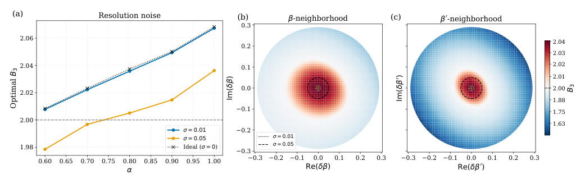
<figcaption class="paper-figure-caption"><b>Fig 2.</b> FIG. 2. (a) Optimal B3 (27) as a function of the seeding parameter α for the state ˆUT|α, α, α⟩at κt = 0.1, degraded by resolution noise of increasing width σ, with the ideal curve (σ = 0) as a comparison. Non-locality properties still occur for standard deviations up to 5%. (b), (c) Bell factor B3 in a disk of radius R = 0.3 around the optimal violation coordinates (β, β′) for κt = 0.1, α = 0.8 (gold central star, B3 = 2.037), with (b) systematic perturbation δβ with β′ fixed at its optimum, and (c) systematic perturbation δβ′ with β fixed at its optimum. The dotted and dashed black circles mark regions within Gaussian errors σ = 0.01 and σ = 0.05, respectively, considered in panel (a).</figcaption>
</figure>
<figure class="paper-figure-card">
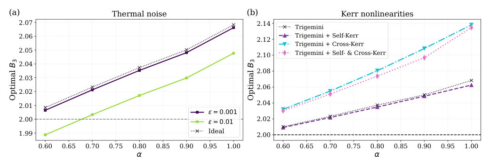
<figcaption class="paper-figure-caption"><b>Fig 3.</b> FIG. 3. Optimal B3 (27) as a function of the seeding parameter α for the state ˆUT|α, α, α⟩at κt = 0.1, with the ideal curve for the state without noise as a comparison in both panels. (a): Detrimental effect of the thermal noise due to increasing admixture values ε from 0.001 to 0.01. The effect of the average thermal excitation ¯n is negligible. (b): Effects of the presence of self- and cross-Kerr terms in the Hamiltonian model. The addition of a self-Kerr term slightly lowers the violation. The presence of a cross-Kerr interaction is beneficial and enhances non-local properties of the state.</figcaption>
</figure>
<figure class="paper-figure-card">
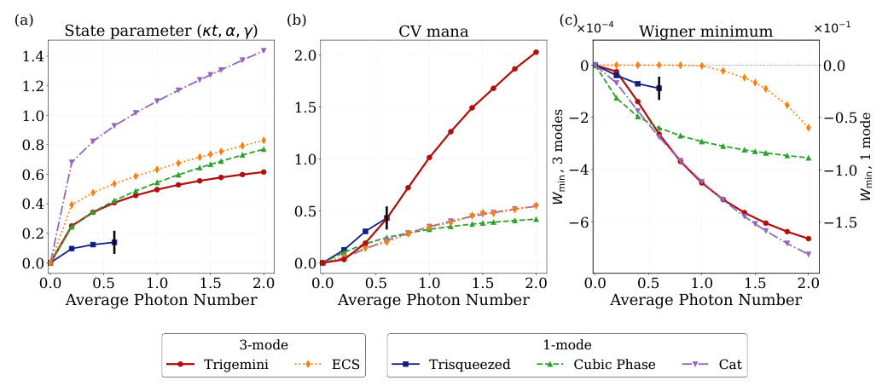
<figcaption class="paper-figure-caption"><b>Fig 4.</b> FIG. 4. Quantifiers of Wigner negativity of the trigemini state compared with the reference states, all as functions of the average photon number. (a) Conversion plot between the native state parameters (κt, α, γ) required to generate each state: trigemini, trisqueezed (34), CPS (35), cat (36) and ECS (37). (b) CV mana of the same states on a common vertical scale. (c) Global minimum of the Wigner function on two vertical scales: the left axis refers to the three-mode states (trigemini and ECS), whose negativity stays within the order of 10−4, the right axis to the single-mode ones (trisqueezed, CPS and cat), which are about two orders of magnitude deeper. In every panel, the trisqueezed...</figcaption>
</figure>
<figure class="paper-figure-card">
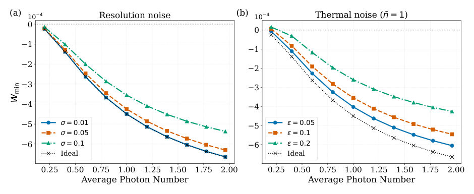
<figcaption class="paper-figure-caption"><b>Fig 5.</b> FIG. 5. Robustness of the global Wigner minimum of the trigemini state, in both panels as a function of the average photon number. (a) Thermal noise: minimum of the Wigner function of the state (30), with ¯n = 1 and ε = 0.05, 0.1, 0.2 (different colors). (b) Resolution noise: minimum of the Wigner function smoothed by a Gaussian kernel of width σ, for σ = 0.01, 0.05, 0.1 (different colors). In both panels the black dotted line is the noiseless reference (trigemini state).</figcaption>
</figure>
</div>

<p><strong>Summary.</strong> This paper analyzes a three-mode non-Gaussian Hamiltonian relevant to continuous-variable quantum computing, focusing on generating and certifying quantum resources like entanglement and Wigner negativity. The authors develop a novel, measurement-efficient protocol that allows experimental validation of the Hamiltonian's action by measuring specific zero-variance observables, significantly reducing experimental overhead.</p>
<p><strong>Why it may be interesting.</strong> It bridges fundamental quantum resource theory (entanglement, nonclassicality) with practical experimental implementation in superconducting circuits, providing concrete validation techniques for complex Hamiltonians.</p>
<details>
<summary>Detailed structure</summary>
<p><strong>Main problem.</strong> The paper addresses the challenge of experimentally characterizing and validating the computational resources generated by non-Gaussian interactions in continuous-variable quantum computation.</p>
<p><strong>Main result.</strong> The authors demonstrate that the three-mode Hamiltonian generates both multipartite entanglement and Wigner negativity, and they propose a measurement-efficient protocol to certify these resources without full Wigner function reconstruction.</p>
<p><strong>Method.</strong> The work combines theoretical analysis of conserved quantities (nullifiers/stabilizers) with experimental protocols utilizing displaced-parity measurements to certify entanglement and resource quantification.</p>
<p><strong>Model / system.</strong> The system is a three-mode quantum system governed by a non-Gaussian trilinear Hamiltonian, $\hat{H}_T$, realized in superconducting microwave platforms.</p>
<p><strong>Key observables.</strong> Multipartite entanglement (certified via nonlocality tests), Wigner negativity (quantified via logarithmic negativity), and zero-variance observables (nullifiers and stabilizers).</p>
<p><strong>Important parameters / regimes.</strong> The coupling strength $\kappa$ and time $t$ governing the Hamiltonian evolution are key parameters.</p>
<p><strong>Assumptions / limitations.</strong> The primary assumption is that a measurement-efficient protocol based on zero-variance observables can substitute for the computationally intensive full reconstruction of the Wigner function.</p>
<p><strong>Figures summary.</strong> Not specified, but the analysis involves comparing numerical results (e.g., Wigner function cross-sections) against analytical solutions for specific states.</p>
<p><strong>Paper structure.</strong> The paper first introduces the Hamiltonian and the need for resource characterization. It then details the theoretical analysis of entanglement and negativity, followed by the proposal and validation of a measurement-efficient experimental protocol.</p>
</details>
<details>
<summary>Abstract</summary>
<p>Non-Gaussian interactions are a key ingredient for achieving universality in continuous-variable quantum computation, yet their experimental characterization and the validation of their correct implementation remain challenging tasks. In this work, we focus on a three-mode non-Gaussian trilinear Hamiltonian that has recently been realized in superconducting microwave platforms, and present a comprehensive theoretical analysis of the computational resources it generates, together with experimentally accessible protocols to validate their presence. We systematically investigate its ability to generate two key resources for quantum computation: multipartite entanglement and Wigner negativity. In particular, using displaced-parity Bell tests, we demonstrate the generation of nonlocal states and thereby provide an operational certification of multipartite entanglement in the non-Gaussian states produced by the dynamics. We further quantify the Wigner logarithmic negativity and benchmark it against that of established non-Gaussian resource states. Building on this resource-based characterization, we introduce a measurement-efficient protocol for the experimental validation of the Hamiltonian implementation without requiring full reconstruction of the Wigner function. The protocol combines the measurement of zero-variance observables (nullifiers and stabilizers) with a limited number of targeted phase-space measurements, leading to a drastic reduction of the experimental overhead.</p>
</details>
<p><sub><a href="#top">↑ back to top</a></sub></p>

<p><a id="paper-2609.09479"></a></p>
<h3 id="exact-asymptotic-equivalence-between-precisions-of-record-times-and-integrated-currents"><a href="http://arxiv.org/abs/2609.09479v1">Exact asymptotic equivalence between precisions of record-times and integrated currents</a></h3>
<p><strong>Authors:</strong> Alberto Garilli<br>
<strong>Type:</strong> theory · <strong>Category:</strong> statistical mechanics · <strong>PDF:</strong> <a href="https://arxiv.org/pdf/2609.09479v1">https://arxiv.org/pdf/2609.09479v1</a><br>
<strong>Analysis basis:</strong> full PDF text, analyzed in chunks
<strong>Topic relevance:</strong> <code>Full counting statistics</code> <strong>3/5</strong> · <code>non-equilibrium universality</code> <strong>2/5</strong> · <code>quantum measurements</code> <strong>2/5</strong> · <code>Keldysh / 2PI / non-Gaussian methods</code> <strong>1/5</strong> · <code>methods for driven-dissipative</code> <strong>1/5</strong></p>
<div class="figure-strip-hint">↔ Scroll figures horizontally</div>
<div class="paper-figures-scroll">
<figure class="paper-figure-card">
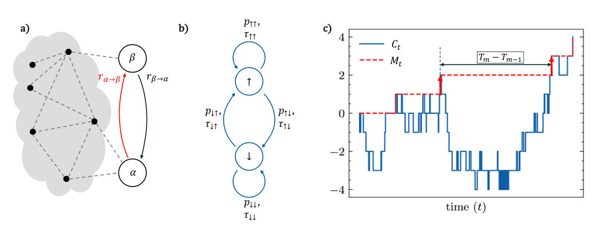
<figcaption class="paper-figure-caption"><b>Fig 1.</b> FIG. 1. a) An example of a network of states connected by transitions. The bi-directional transition connecting states α and β is observable, while we assume to have no knowledge about the hidden states and transitions (not necessarily bi-directional) occurring in the rest of the system (black dots and dashed lines inside the cloud). b) The associated trans-transition network. Each arrow indicates a possible succession of visible transitions, and it is associated with a trans-transition probability pℓ′ℓ and an inter-transition time τℓ′ℓ. c) Example of a trajectory of the observable current Ct along α ↔β. The evolution of the auxiliary inter-record process Mt is highlighted by a red dashed...</figcaption>
</figure>
<figure class="paper-figure-card">
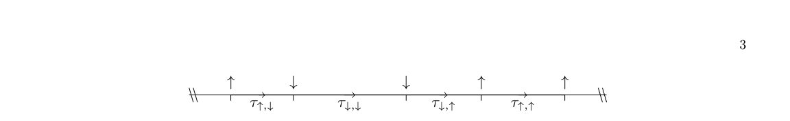
<figcaption class="paper-figure-caption"><b>Fig 2.</b> FIG. 2. Graphical representation of the temporal succession ↑→↓→↓→↑→↑of visible transitions with the corresponding inter- transition times. The time-series of the total integrated current Ct can be represented as a succession of visible transitions ↑ (which increase Ct) and ↓(which decrease Ct). The time between two visible transitions ℓ′ and ℓis denoted by τℓ′,ℓ.</figcaption>
</figure>
<figure class="paper-figure-card">
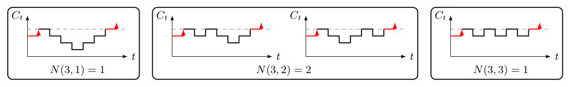
<figcaption class="paper-figure-caption"><b>Fig 3.</b> FIG. 3. Construction of the Laplace transform Eq. (17). a) An excursion ∆T is defined as the time interval between two successive increments of the auxiliary process Mt (red arrows). Each excursion is decomposed into elementary time intervals τi, with i = 1, . . . , ˜l, where ˜l is the total number of intervals in the excursion. Each interval is identified with an inter-transition time, while the last one, τincr, is necessarily associated with the succession ↑→↑. Since the inter-transition times are independent, the Laplace transform of the distribution of ∆T factorizes into the product of the Laplace transforms of the individual inter- transition-time distributions. This yields the general...</figcaption>
</figure>
</div>

<p><strong>Summary.</strong> This paper proves a precise mathematical equivalence between two distinct measures of fluctuation in Markov jump processes: the Fano factor of the integrated current and the precision of the time intervals between record-setting events. By establishing this link, the authors provide a unified, purely probabilistic understanding of current noise, extending previous results to general finite-state graphs.</p>
<p><strong>Why it may be interesting.</strong> This work provides a powerful, purely probabilistic framework to analyze non-equilibrium fluctuations in complex systems, connecting macroscopic current statistics to microscopic event timing statistics, which is relevant for open quantum systems modeling.</p>
<details>
<summary>Detailed structure</summary>
<p><strong>Main problem.</strong> Establishing an exact asymptotic equivalence between the fluctuations of integrated currents and the temporal statistics of current record events in continuous-time Markov jump processes.</p>
<p><strong>Main result.</strong> The Fano factor of the integrated current ($F_C$) is exactly equal to the squared coefficient of variation of the inter-record waiting times ($  ext{P}\Delta T$).</p>
<p><strong>Method.</strong> The equivalence is derived by showing that inter-record times induce a renewal structure, allowing the use of generating functions and combinatorial tools like Narayana numbers.</p>
<p><strong>Model / system.</strong> The study concerns continuous-time Markov jump processes on finite-state graphs, focusing on the net current crossing a specific bidirectional channel ($\alpha \leftrightarrow eta$).</p>
<p><strong>Key observables.</strong> Fano factor of the integrated current ($F_C$), squared coefficient of variation of inter-record waiting times ($ ext{P}\Delta T$), and inter-record times ($\Delta T_m$).</p>
<p><strong>Important parameters / regimes.</strong> The analysis requires the system to be in a stationary state and assumes the observed channel is bidirectional.</p>
<p><strong>Assumptions / limitations.</strong> Minimal assumptions include bidirectionality on the observed channel and hidden irreducibility of the underlying graph structure.</p>
<p><strong>Figures summary.</strong> Figures illustrate the network structure, the temporal succession of visible transitions, and the decomposition of the inter-record time $\Delta T$ into a product form involving inter-transition times.</p>
<p><strong>Paper structure.</strong> The paper develops the equivalence by first analyzing the reduced dynamics tracking visible transitions, showing the renewal structure of inter-record times, and finally equating the resulting fluctuation measures ($F_C$ and $   ext{P}\Delta T$) using Laplace transform techniques.</p>
</details>
<details>
<summary>Abstract</summary>
<p>We establish an exact equivalence between the fluctuations of integrated currents and the temporal statistics of current record events in continuous-time Markov jump processes. Specifically, we show that, under minimal assumptions, the Fano factor of an integrated current coincides exactly with the squared coefficient of variation of the inter-record waiting times. This result is obtained by showing that inter-record times induce a renewal structure, since each record event resets the system to a fixed state, and that their generating function can be expressed exactly in terms of a combinatorial organization governed by Narayana numbers. The equivalence extends previous results obtained for unicyclic networks to arbitrary finite-state graphs and provides a unified representation of current fluctuations in terms of record-time observables. The results are derived within a purely probabilistic framework and clarify the structural origin of current precision in terms of first-passage-like event statistics.</p>
</details>
<p><sub><a href="#top">↑ back to top</a></sub></p>

<p><a id="paper-2609.09571"></a></p>
<h3 id="momentum-resolved-quantum-noise-spectroscopy-using-ensembles-of-diamond-quantum-sensors"><a href="http://arxiv.org/abs/2609.09571v1">Momentum-resolved quantum noise spectroscopy using ensembles of diamond quantum sensors</a></h3>
<p><strong>Authors:</strong> Zeeshawn Kazi, Kai-Hung Cheng, Jared Rovny, Nathalie P. de Leon<br>
<strong>Type:</strong> experiment · <strong>Category:</strong> other · <strong>PDF:</strong> <a href="https://arxiv.org/pdf/2609.09571v1">https://arxiv.org/pdf/2609.09571v1</a><br>
<strong>Analysis basis:</strong> full PDF text, analyzed in chunks
<strong>Topic relevance:</strong> <code>QC/QI experiment</code> <strong>3/5</strong> · <code>quantum measurements</code> <strong>3/5</strong> · <code>quantum optics experiment</code> <strong>2/5</strong> · <code>analog quantum simulation</code> <strong>1/5</strong></p>
<div class="figure-strip-hint">↔ Scroll figures horizontally</div>
<div class="paper-figures-scroll">
<figure class="paper-figure-card">
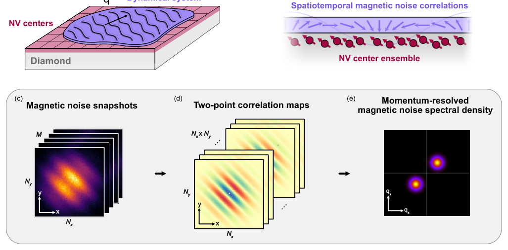
<figcaption class="paper-figure-caption"><b>Fig 1.</b> FIG. 1. Momentum-resolved magnetic noise spectral density. (a) Schematic of a correlated, dynamic material system directly on top of a diamond hosting NV centers. (b) Zoomed in schematic showing correlated dynamics of the system sensed by a shallow NV center ensemble. (c) Fluorescence images record the magnetic noise measured by NV centers across the imaging field of view. Each pixel records the signals sensed by hundreds of NV centers (𝑁𝑥by 𝑁𝑦pixels), and 𝑀shots are taken. (d) High-fidelity imaging of NV center signals enables the construction of 𝑁𝑥× 𝑁𝑦maps of two-point magnetic noise correlators. Each map represents the correlation at a given pixel with respect to a reference pixel...</figcaption>
</figure>
<figure class="paper-figure-card">
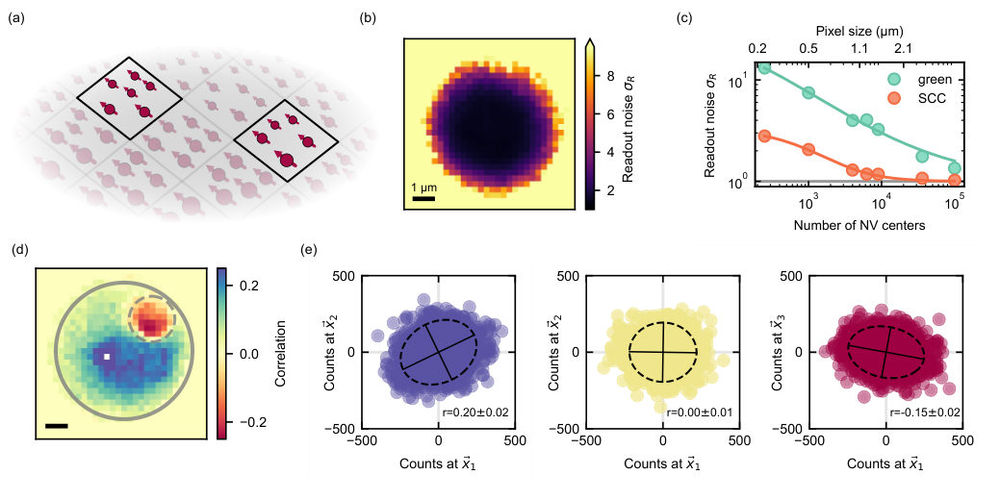
<figcaption class="paper-figure-caption"><b>Fig 2.</b> FIG. 2. High-fidelity, wide-field readout enables massively multiplexed correlation measurements. (a) Schematic of camera readout of a high-density NV center ensemble. (b) Map of spin state readout noise 𝜎𝑅, where each pixel is used as an individual sensor. (c) The readout noise 𝜎𝑅scales with the number of NV centers in the pixel. Spin-to-charge conversion (SCC) strongly outperforms green readout for low numbers of NV centers. The lines are fit to a power law lower bounded by 1. (d) Correlation map resulting from global driven Rabi oscillations. Sensors in the dashed circle are prepared in the opposite spin state to those in the solid circle only. (e) Photon count distributions...</figcaption>
</figure>
<figure class="paper-figure-card">
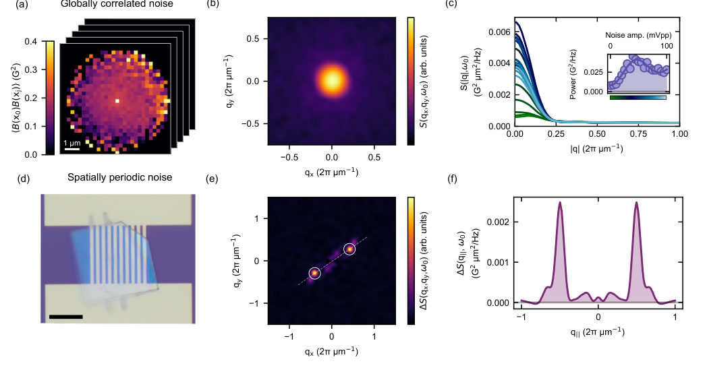
<figcaption class="paper-figure-caption"><b>Fig 3.</b> FIG. 3. Momentum-resolved magnetic noise spectroscopy reveals the spatial structure of magnetic noise. (a) Two-point magnetic noise correlations at each pixel with respect to the white pixel across the imaging field of view, caused by globally applied noise from an RF coil. (b) The Fourier transform of multiplexed correlator measurements results in the momentum-resolved magnetic noise spectral density 𝑆(q, 𝜔0). (c) Radially averaged 𝑆(|𝑞|, 𝜔0) profiles (color indicates applied noise amplitude). A Gaussian fit to each returns FWHM|𝑞| ≈2𝜋× 0.2 µm−1, corresponding to the inverse of the imaging field of view (5 µm). Inset: total noise power from integrating each profile from 𝑞= 0 to 𝑞max; the...</figcaption>
</figure>
<figure class="paper-figure-card">
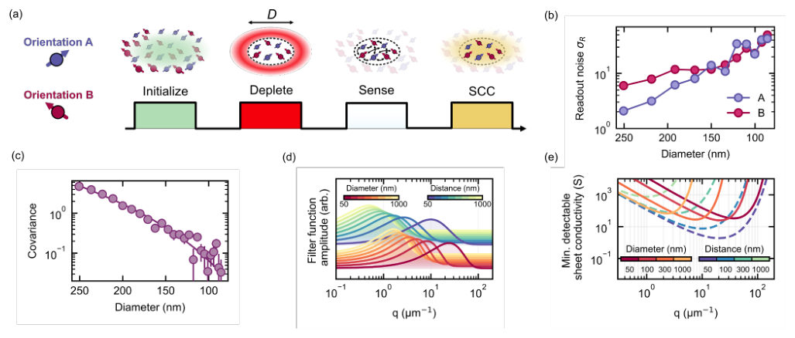
<figcaption class="paper-figure-caption"><b>Fig 4.</b> FIG. 4. Tunable momentum filter functions beyond the diffraction limit. (a) Measuring correlations between NV center orientations A and B below the diffraction limit. Confocal lasers initialize the charge and spin states; a doughnut pulse then ionizes NV centers in a ring, leaving sensors within a diameter 𝐷. A sensing sequence measures correlations within the volume and is read out by spin-to-charge conversion. (b) Spin state readout noise 𝜎𝑅for each orientation scales strongly with decreasing sensing volume diameter. (c) Covariance between orientations A and B in a single spot, caused by applied noise at 2.5 MHz, versus sensing volume. Error bars, standard error of the variance for...</figcaption>
</figure>
</div>

<p><strong>Summary.</strong> This work presents a novel technique using wide-field imaging of diamond NV ensembles to measure the momentum-resolved magnetic noise power spectral density. By measuring two-point correlations across large areas, the authors overcome the resolution limits of conventional probes. This allows for the direct mapping of low-energy, long-wavelength magnetic fluctuations critical for understanding strongly correlated materials.</p>
<p><strong>Why it may be interesting.</strong> The use of quantum sensors (NV centers) to probe collective, low-energy, long-wavelength fluctuations in correlated matter bridges quantum optics, condensed matter physics, and advanced sensing techniques.</p>
<details>
<summary>Detailed structure</summary>
<p><strong>Main problem.</strong> Characterizing spatiotemporal fluctuations in strongly correlated matter is challenging because conventional probes lack simultaneous high spatial and temporal resolution.</p>
<p><strong>Main result.</strong> The technique successfully measures the momentum-resolved magnetic noise power spectral density, $S(\mathbf{q}, \omega_0)$, by leveraging wide-field correlation measurements.</p>
<p><strong>Method.</strong> The authors use wide-field imaging of diamond NV ensembles to measure two-point magnetic correlations, which are then Fourier transformed to obtain the momentum-resolved spectral density.</p>
<p><strong>Model / system.</strong> The physical system is a solid-state platform using dense ensembles of diamond nitrogen vacancy (NV) centers. The measurement probes magnetic fluctuations, relating the measured noise variance to the dynamical structure factor.</p>
<p><strong>Key observables.</strong> Momentum-resolved magnetic noise power spectral density $S(\mathbf{q}, \omega_0)$, and real-space magnetic field correlation maps.</p>
<p><strong>Important parameters / regimes.</strong> Spatial wavevectors ($\mathbf{q}$) spanning three orders of magnitude, and tunable frequency bands ($\omega_0$).</p>
<p><strong>Assumptions / limitations.</strong> The method assumes the noise structure factor can be reconstructed by Fourier transforming the measured two-point correlation function, and the wide-field measurement assumes translational symmetry.</p>
<p><strong>Figures summary.</strong> Figures illustrate the process of mapping magnetic field correlations, computing the Fourier transform to reveal finite momentum features, and detailing the wide-field spin-to-charge conversion (SCC) readout.</p>
<p><strong>Paper structure.</strong> The paper develops the theoretical framework for measuring $S(\mathbf{q}, \omega_0)$ using correlation functions, details the wide-field and sub-diffraction measurement schemes, and presents results showing the ability to resolve anisotropic and periodic fluctuations.</p>
</details>
<details>
<summary>Abstract</summary>
<p>Spatiotemporal fluctuations across multiple scales govern and characterize the emergent properties, phase boundaries, and low-energy excitations of strongly correlated matter. However, capturing these dynamics has remained a major experimental challenge, as conventional probes typically offer either high spatial or temporal resolution, but not both simultaneously. Here, we leverage high-fidelity wide-field imaging of dense diamond nitrogen vacancy center ensembles to measure the momentum and frequency power spectral density of magnetic fluctuations. To access spatial wavevectors below the diffraction limit, we tune the sensing volume continuously through optical depletion. This approach enables study of equilibrium and driven fluctuations across three orders of magnitude in spatial scale and tunable frequency bands, providing a direct means to map low-energy, long-wavelength fluctuations in correlated systems.</p>
</details>
<p><sub><a href="#top">↑ back to top</a></sub></p>

<p><a id="paper-2609.09518"></a></p>
<h3 id="the-role-of-concentration-in-determining-nacl-nucleation-mechanism-a-story-of-pathways-coexistence"><a href="http://arxiv.org/abs/2609.09518v1">The Role of Concentration in Determining NaCl Nucleation Mechanism: A Story of Pathways Coexistence</a></h3>
<p><strong>Authors:</strong> Porhouy Minh, Sapna Sarupria<br>
<strong>Type:</strong> theory · <strong>Category:</strong> statistical mechanics · <strong>PDF:</strong> <a href="https://arxiv.org/pdf/2609.09518v1">https://arxiv.org/pdf/2609.09518v1</a><br>
<strong>Analysis basis:</strong> full PDF text, analyzed in chunks
<strong>Topic relevance:</strong> <code>methods for driven-dissipative</code> <strong>3/5</strong> · <code>non-equilibrium universality</code> <strong>2/5</strong> · <code>quantum measurements</code> <strong>2/5</strong> · <code>Keldysh / 2PI / non-Gaussian methods</code> <strong>1/5</strong> · <code>analog quantum simulation</code> <strong>1/5</strong></p>
<div class="figure-strip-hint">↔ Scroll figures horizontally</div>
<div class="paper-figures-scroll">
<figure class="paper-figure-card">

<figcaption class="paper-figure-caption"><b>Fig 1.</b> Figure 1: Nucleation rate, log10(J/(m−3s−1)), as a function of level of supersaturation, S. Results from this work (black hexagons) are provided in context of previous simulation studies using BF [15, 16, 19, 30], FFS [15], TIS [20] and seeding methods [19], as well as experimental measurements [27–29]. Error bars denote the uncertainty in the computed nucleation rates.</figcaption>
</figure>
<figure class="paper-figure-card">
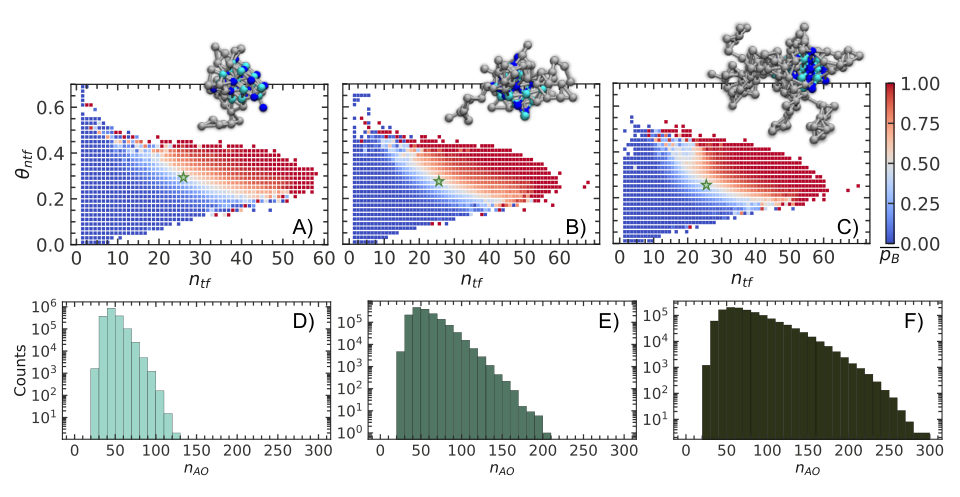
<figcaption class="paper-figure-caption"><b>Fig 2.</b> Figure 2: (A-C) Average pB projection of configurations from systems at (A) 12, (B) 13, and (C) 14 mol/kg onto ntf (x-axis) and θntf (y-axis). The plots are colored by the committor value from 0 to 1. The bin size for the x-axis is 1, and 0.02 for the y-axis. The representative snapshots shown in the insets of Panels A-C correspond to the configuration marked by the green star. The snapshot configurations have an ntf value of 26. Na+ and Cl−ions of ntf are represented in blue and cyan, respectively. Amorphous ions in nAO that do not overlap with ntf are shown in gray. (D-E) nAO distribution of transition state configurations (0.45 ≤pB ≤0.55) at (D) 12, (E) 13, and (F) 14 mol/kg.</figcaption>
</figure>
<figure class="paper-figure-card">
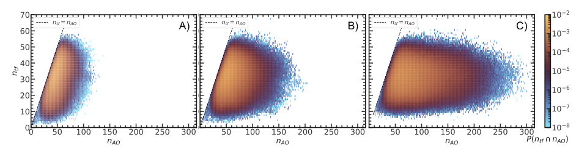
<figcaption class="paper-figure-caption"><b>Fig 3.</b> Figure 3: Joint probability distribution from nucleation trajectories of the largest crystalline nucleus (ntf) and the largest amorphous aggregate overlapping with ntf (nAO) for systems at (A) 12, (B) 13, and (C) 14 mol/kg. The joint probability is computed from RPE-weighted configurations sampled along reactive trajectories using bin widths of one in both order parameters.</figcaption>
</figure>
<figure class="paper-figure-card">

<figcaption class="paper-figure-caption"><b>Fig 4.</b> Figure 4: Conditional probability distribution from nucleation trajectories of ntf for a given nAO size for systems at (A) 12, (B) 13, and (C) 14 mol/kg. The green crosses mark the maximum of each conditional probability along a given nAO bin. The conditional probability is calculated from the joint probability distributions shown in Fig. 3.</figcaption>
</figure>
<figure class="paper-figure-card">
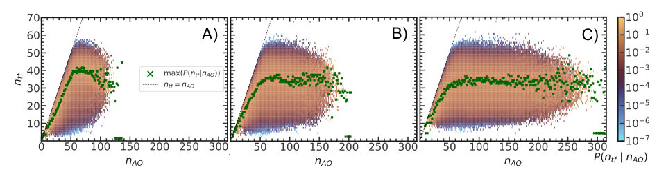
<figcaption class="paper-figure-caption"><b>Fig 5.</b> Figure 4 shows the conditional probability distributions for the three concentrations studied. If nucleation proceeds predominantly through a one-step mechanism, the maxima of P(ntf|nAO) are expected to remain close to the ntf = nAO line, reflecting concerted growth in both dense ion aggregation and crystallinity. In contrast, deviation of the maxima away from this diagonal indicates increasing decoupling between dense cluster formation and crystalline ordering, consistent with two-step-like growth behavior.</figcaption>
</figure>
</div>

<p><strong>Summary.</strong> This work investigates the nucleation mechanism of NaCl in solution across varying supersaturations using advanced path sampling simulations. By analyzing the joint probability distribution of crystalline and amorphous clusters, the authors show that the mechanism shifts continuously rather than abruptly changing between distinct steps. This suggests that nucleation is governed by an ensemble of competing pathways whose relative weights are tuned by the degree of supersaturation.</p>
<p><strong>Why it may be interesting.</strong> Although focused on classical nucleation, the methodology—using advanced path sampling and analyzing the continuous ensemble of competing reactive pathways—is highly relevant to understanding non-equilibrium dynamics in complex many-body systems, which has parallels in quantum many-body physics.</p>
<details>
<summary>Detailed structure</summary>
<p><strong>Main problem.</strong> The paper aims to resolve the long-standing debate regarding the microscopic mechanism of crystal nucleation in aqueous NaCl, specifically whether the process is a single-step or two-step pathway dependent on supersaturation.</p>
<p><strong>Main result.</strong> Nucleation pathways are not distinct metastable states but rather coexist within a single broad reaction channel, with the relative probability of amorphous vs. crystalline growth continuously varying with increasing supersaturation.</p>
<p><strong>Method.</strong> The study employs unbiased path sampling techniques, such as $\infty$RETIS, combined with advanced analysis tools like reaction coordinate analysis, joint/conditional probability distributions, and free energy landscape mapping.</p>
<p><strong>Model / system.</strong> The physical system is the nucleation of sodium chloride (NaCl) from an aqueous solution, studied across three distinct supersaturation regimes (12, 13, and 14 mol/kg).</p>
<p><strong>Key observables.</strong> Nucleation rate ($J$), joint probability $P(	ext{ntf}, 	ext{nAO})$, conditional probability $P(	ext{ntf}|	ext{nAO})$, and the optimal reaction coordinate ($  ext{ntf}    heta    ext{ntf}$).</p>
<p><strong>Important parameters / regimes.</strong> Supersaturation ($S = 3.2, 3.5, 3.8$); cluster size ($  ext{ntf}$, $    ext{nAO}$); crystalline ordering ($ heta    ext{ntf}$).</p>
<p><strong>Assumptions / limitations.</strong> The analysis assumes that the continuous variation in pathway probabilities within a single reaction channel is sufficient to describe the mechanism, rather than requiring distinct free energy barriers for separate metastable states.</p>
<p><strong>Figures summary.</strong> Figures compare computed nucleation rates across methods vs. supersaturation; joint probability distributions show progressive broadening away from the diagonal line as concentration increases; and representative trajectories illustrate the transition between one-step and two-step-like growth.</p>
<p><strong>Paper structure.</strong> The paper progresses by first establishing the need to analyze reactive trajectories over simple free energy projections. It then uses path sampling to map the joint probability landscape, demonstrating how the coupling between amorphous and crystalline growth changes systematically with supersaturation, ultimately reconciling conflicting mechanistic reports.</p>
</details>
<details>
<summary>Abstract</summary>
<p>Deciphering the microscopic details of crystal nucleation remains a key open problem in chemical physics. For aqueous sodium chloride (NaCl), the extent to which nucleation involves amorphous ion aggregation, and the supersaturation regime in which two-step-like behavior emerges, remains actively debated. In this work, we examine NaCl nucleation at 12, 13, and 14 mol/kg ($S = 3.2, 3.5, 3.8$) using unbiased path sampling with $\infty$RETIS. Through a combination of reaction coordinate analysis, joint and conditional probability distributions, diffusion tensor analysis, and conditional free energy landscapes, we identify nucleation pathways without a priori mechanistic assumptions. While all concentrations are governed by the same reaction coordinate, indicating that nucleus growth and structural ordering are central to crossing the barrier, the nature of reactive trajectories changes with supersaturation. At lower concentrations, nucleation mainly occurs via tightly coupled increases in cluster size and ordering, compatible with a one-step-like mechanism. As concentration increases, amorphous aggregation becomes increasingly decoupled from crystallization, and pathways involving substantial amorphous growth prior to crystallization become progressively more probable. Importantly, these pathways coexist within a single broad reaction channel rather than proceeding through distinct metastable intermediate states. Together, these results reconcile earlier, contradictory reports on NaCl nucleation mechanisms and support a view of nucleation as an ensemble of competing reactive pathways whose relative probabilities vary continuously with supersaturation. More broadly, our findings illustrate that substantial mechanistic diversity can emerge within a classical nucleation framework, without requiring distinct non-classical descriptions.</p>
</details>
<p><sub><a href="#top">↑ back to top</a></sub></p>

<p><a id="paper-2609.10519"></a></p>
<h3 id="optimal-intermediate-hamiltonians-for-non-equilibrium-free-energy-calculations-a-numerical-study-of-markov-models"><a href="http://arxiv.org/abs/2609.10519v1">Optimal Intermediate Hamiltonians for Non-Equilibrium Free Energy Calculations: A Numerical Study of Markov Models</a></h3>
<p><strong>Authors:</strong> David Beyer, Helmut Grubmüller<br>
<strong>Type:</strong> theory · <strong>Category:</strong> statistical mechanics · <strong>PDF:</strong> <a href="https://arxiv.org/pdf/2609.10519v1">https://arxiv.org/pdf/2609.10519v1</a><br>
<strong>Analysis basis:</strong> full PDF text, analyzed in chunks
<strong>Topic relevance:</strong> <code>methods for driven-dissipative</code> <strong>3/5</strong> · <code>Keldysh / 2PI / non-Gaussian methods</code> <strong>1/5</strong> · <code>analog quantum simulation</code> <strong>1/5</strong> · <code>driven-dissipative phase transition</code> <strong>1/5</strong> · <code>non-equilibrium universality</code> <strong>1/5</strong> · <code>quantum measurements</code> <strong>1/5</strong></p>
<div class="figure-strip-hint">↔ Scroll figures horizontally</div>
<div class="paper-figures-scroll">
<figure class="paper-figure-card">

<figcaption class="paper-figure-caption"><b>Fig 1.</b> FIG. 1. Schematic representation of the discrete-time Markov models studied in this work. The discrete states are arranged on a line, and transitions are allowed only between neighboring states. Transition probabilities are given by the Glauber transition matrix elements π(x →y;τ) (Equation 6), which depend on the time-dependent Hamiltonian H(x,τ +1).</figcaption>
</figure>
<figure class="paper-figure-card">
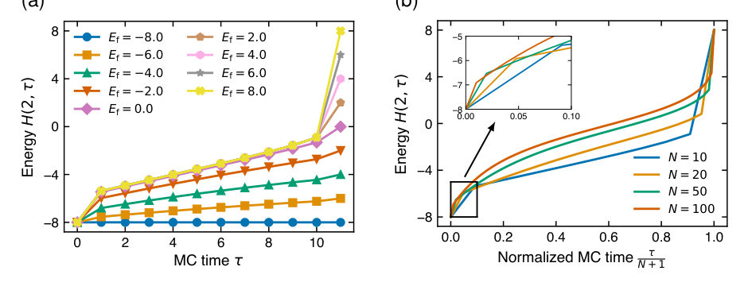
<figcaption class="paper-figure-caption"><b>Fig 2.</b> FIG. 2. Optimal intermediate Hamiltonians H(2,τ) for the two-state system with an initial energy of Ei = −8. (a): H(2,τ) for N = 10 intermediates and different final energies Ef. (b): H(2,τ) for a final energy of Ef = 8 and different numbers of intermediates N. The MC time was normalized by the total number of steps N +1. The inset magnifies the initial jump.</figcaption>
</figure>
<figure class="paper-figure-card">

<figcaption class="paper-figure-caption"><b>Fig 3.</b> FIG. 3. Performance of optimal intermediates for a two-state sys- tem. (a): Dependence of the MSE for linear, logarithmic, and opti- mal intermediates on the number n of trajectories per replica. The initial energy is set to Ei = −6, the final energy is set to Ef = 2, and the number of intermediate steps is N = 10. The black dashed line shows the expected power-law decay MSE ∝1/n for n →∞. (b): Correlation plot of the MSE for linear and optimal intermediates. (c): Correlation plot of the mean work performed on the system for linear and optimal intermediates. In all subfigures (a)–(c), error bars corresponding to the standard error of the mean of the shown quanti- ties are included, but...</figcaption>
</figure>
<figure class="paper-figure-card">
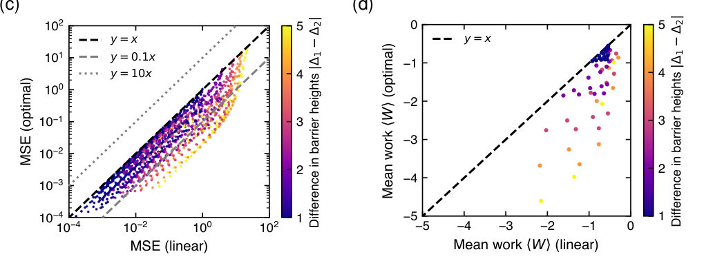
<figcaption class="paper-figure-caption"><b>Fig 4.</b> FIG. 4. Optimal intermediates and their performance for the double-well potential. (a): Toy model for a double-well potential with barrier heights ∆1 and ∆2. (b): Optimal intermediate Hamiltonian for a double-well potential with ∆1 = 6, ∆2 = 3, and N = 100 intermediate MC steps. (c): Correlation plot of the MSE for linear and optimal intermediates. (d): Correlation plot of the mean work performed on the system for linear and optimal intermediates. For subfigures (c) and (d), error bars corresponding to the standard error of the mean of the shown quantities are included, but smaller than the symbol size.</figcaption>
</figure>
<figure class="paper-figure-card">
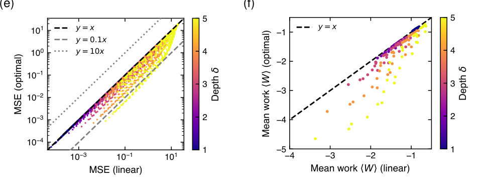
<figcaption class="paper-figure-caption"><b>Fig 5.</b> FIG. 5. Optimal intermediates and their performance for the shifted potential well. (a): Toy model for a potential well of depth δ that is shifted from x = 1 at time τ = 0 to x = m at time τ = N +1. (b): Optimal intermediate Hamiltonian for a shifted potential well of depth δ = 5, with m = 10 states and N = 100 intermediate MC steps. The insets show magnified views of the initial and final jumps. (c): Mean position ⟨x⟩as a function of τ for δ = 5, m = 10 states, and N = 100, shown for optimal, linear, and logarithmic (α = 1 and α = 2) intermediates. (d): Correlation plot of the time-dependent mean position ⟨x⟩obtained for optimal and linear intermediates. The curves are colored according to...</figcaption>
</figure>
</div>

<p><strong>Summary.</strong> This work introduces a method to optimize the intermediate Hamiltonians used in non-equilibrium free energy calculations, specifically targeting the convergence issues of the Jarzynski estimator. By minimizing the Mean Squared Error (MSE) using gradient-based optimization on Markov models, the authors show that optimal Hamiltonians drastically improve accuracy. This provides valuable heuristics for simulating complex physical processes where rare events dominate the work average.</p>
<p><strong>Why it may be interesting.</strong> The methodology provides a powerful, generalizable framework for improving non-equilibrium calculations, which is crucial for simulating processes like reaction rates or work extraction in complex quantum or molecular systems.</p>
<details>
<summary>Detailed structure</summary>
<p><strong>Main problem.</strong> The paper addresses the poor convergence of the Jarzynski estimator when estimating equilibrium free energy differences from non-equilibrium, finite-time switching simulations.</p>
<p><strong>Main result.</strong> Optimal intermediate Hamiltonians significantly reduce the Mean Squared Error (MSE) of the Jarzynski estimator by more than an order of magnitude compared to simple interpolation schemes.</p>
<p><strong>Method.</strong> The authors developed a gradient-based minimization technique using an exact tilted-master-equation representation of the MSE for discrete-time Markov models.</p>
<p><strong>Model / system.</strong> The study utilizes discrete-time Markov models with a finite state space arranged on a line, governed by a time-dependent Hamiltonian $H(x, 	au)$ and evolving via a master equation.</p>
<p><strong>Key observables.</strong> Mean Squared Error (MSE) of the Jarzynski estimator, mean work $\langle W 
angle$, and mean position $\langle x 
angle$.</p>
<p><strong>Important parameters / regimes.</strong> System size ($m$), potential well depth ($\delta$), number of intermediates ($N$), and time steps ($ au$).</p>
<p><strong>Assumptions / limitations.</strong> The analysis relies on approximating the MSE in the large-sample limit and assumes the Jarzynski relation holds for the chosen Markov dynamics.</p>
<p><strong>Figures summary.</strong> Figures systematically compare the structure of optimal vs. linear/logarithmic intermediate Hamiltonians across varying system parameters, and correlation plots show MSE and mean work comparisons.</p>
<p><strong>Paper structure.</strong> The paper progresses from establishing the theoretical framework (Jarzynski relation, MSE minimization) to applying the optimization technique to various model systems (two-state, double-well, shifted potential) and rigorously benchmarking the optimal Hamiltonians against standard interpolation methods.</p>
</details>
<details>
<summary>Abstract</summary>
<p>The Jarzynski relation enables the estimation of equilibrium free energy differences from non-equilibrium, finite-time switching simulations. These estimates usually converge poorly because rare trajectories dominate the exponential work average. Here, we numerically determined and explored the sequence of intermediate Hamiltonians connecting initial and final states that minimize the mean squared error (MSE) of the Jarzynski estimator and thereby enhance convergence. For discrete-time Markov models, an exact tilted-master-equation representation of the MSE in the large-sample limit, combined with automatic differentiation, enables efficient gradient-based minimization over all intermediate energies. We applied our approach to three model systems of increasing complexity: a two-state model, a double-well potential, and a shifted potential well. In all three systems, the optimal intermediate Hamiltonians jump at the initial and final times. Extensive Monte Carlo simulations show that optimal intermediates can reduce the MSE by more than an order of magnitude compared with linear and logarithmic interpolation, most strongly for large changes in the energy landscape. Remarkably, they need not dissipate less work than intermediates yielding larger errors. Our results suggest heuristics for more efficient non-equilibrium free energy calculations of realistic molecular systems: optimal intermediate Hamiltonians jump at the initial and final times; for barrier-crossing problems, the barrier should be lowered rapidly and raised again later; and minimizing dissipation does not guarantee faster convergence.</p>
</details>
<p><sub><a href="#top">↑ back to top</a></sub></p>

<p><a id="paper-2609.09498"></a></p>
<h3 id="gap-controlled-thermalization-in-a-ssh-model-version-of-the-fermi-pasta-ulam-tsingou-chain"><a href="http://arxiv.org/abs/2609.09498v1">Gap-controlled thermalization in a SSH model version of the Fermi-Pasta-Ulam-Tsingou chain</a></h3>
<p><strong>Authors:</strong> José A. Aké, Gerardo G. Naumis<br>
<strong>Type:</strong> theory · <strong>Category:</strong> statistical mechanics · <strong>PDF:</strong> <a href="https://arxiv.org/pdf/2609.09498v1">https://arxiv.org/pdf/2609.09498v1</a><br>
<strong>Analysis basis:</strong> full PDF text, analyzed in chunks
<strong>Topic relevance:</strong> <code>scars &amp; prethermalization</code> <strong>3/5</strong> · <code>analog quantum simulation</code> <strong>2/5</strong> · <code>Frenkel-Kontorova</code> <strong>1/5</strong> · <code>non-equilibrium universality</code> <strong>1/5</strong></p>
<div class="figure-strip-hint">↔ Scroll figures horizontally</div>
<div class="paper-figures-scroll">
<figure class="paper-figure-card">

<figcaption class="paper-figure-caption"><b>Fig 1.</b> Figure 1. Schematic of the alternating FPUT chain with spring con- stants 𝜅𝐴= 1 + Δ𝜅and 𝜅𝐵= 1 −Δ𝜅connecting identical masses. As 𝜅𝐵→0, the system is dimerized in pairs of masses joined by the non linear spring with stiffness 𝜅𝐴. The optical branch corresponds to the oscillations of such 𝑁/2 dimers, while the other 𝑁/2 modes become the center of mass movement of each dimer, with zero frequency os- cillations. Thus the system becomes flexible in the sense of rigidity theory as the acoustic branch is made by 𝑁/2 floppy modes.</figcaption>
</figure>
<figure class="paper-figure-card">

<figcaption class="paper-figure-caption"><b>Fig 2.</b> Figure 2. Dispersion relation [Eq. (10)] for varying Δ𝜅, showing the frequency gap at 𝑘= 𝜋/𝑎plotted in the reduced zone scheme. The gap grows as Δ𝜅grows, setting the frequency barrier that must be bridged by nonlinear resonances for interbranch energy transfer to occur.</figcaption>
</figure>
<figure class="paper-figure-card">
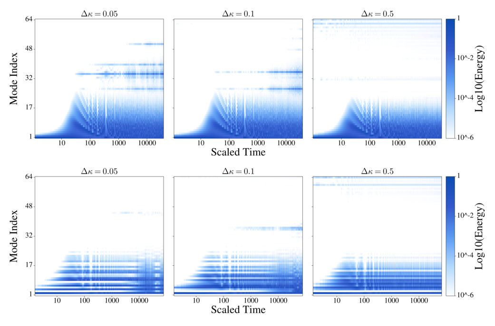
<figcaption class="paper-figure-caption"><b>Fig 3.</b> Figure 3. Modal energy heat maps for 𝛼-type nonlinearity, 𝑁= 64, 𝜖= 0.0069. 𝛼= 0.1 Top panel: FBC (first-mode excitation). Bottom panel: PBC (second-mode excitation). Observe how for the Δ𝜅= 0.5 case, the highest frequency optical mode is excited due to the first available umklapp process.</figcaption>
</figure>
<figure class="paper-figure-card">
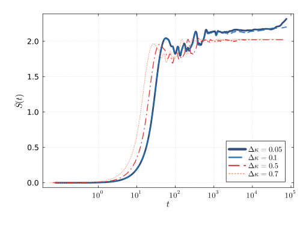
<figcaption class="paper-figure-caption"><b>Fig 4.</b> Figure 4. Time-averaged spectral entropy ¯𝑆(𝑡) vs. time for FBC, first- mode excitation, 𝛼= 0.1, 𝑁= 64, 𝜖= 0.0069. Below the isolation threshold (Δ𝜅= 0.05, thick blue), the system shows relaxation within 𝑡∼102 periods. At and above the threshold (Δ𝜅= 0.5 and 0.7, thin red), ¯𝑆(𝑡) saturates at lower plateaus.</figcaption>
</figure>
<figure class="paper-figure-card">
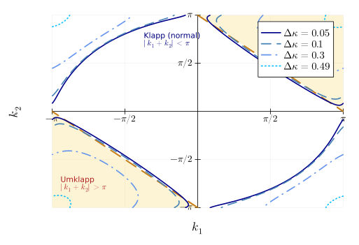
<figcaption class="paper-figure-caption"><b>Fig 5.</b> Figure 7. Contour plot of the resonance condition manifold |𝜔−(𝑘1)+ 𝜔−(𝑘2) −𝜔+(𝑘3)| &lt; 𝛾for 𝛾&lt;&lt; 10−6 for different Δ𝜅values and for the 𝛼-type nonlinearity. This shows how the accessible resonant triads depend on Δ𝜅. The momentum conservation and gap width controls the density of resonances connecting acoustic and optical modes. The resonance manifold disappears as Δ𝜅→0.5, establishing a hard gap-isolation threshold. The value Δ𝜅= 0.5 signals the emergence of the first possible umklapp process. The shaded area corresponds to the possible umklapp processes allowed by momentum conservation. The red dotted lines indicates the limits of such region.</figcaption>
</figure>
</div>

<p><strong>Summary.</strong> This work examines how introducing a spectral gap via dimerization in a nonlinear lattice (SSH/FPUT model) controls energy thermalization. The authors find that the gap acts as a filter, preventing energy transfer above a critical dimerization strength. This suggests a general mechanism for controlling energy dynamics in topologically gapped nonlinear materials.</p>
<p><strong>Why it may be interesting.</strong> The concept of using engineered spectral gaps to control energy flow and suppress thermalization is highly relevant to understanding energy transport in complex quantum and classical many-body systems.</p>
<details>
<summary>Detailed structure</summary>
<p><strong>Main problem.</strong> The study investigates whether a spectral gap in a dimerized lattice hinders or promotes long-time thermalization in a classical nonlinear system.</p>
<p><strong>Main result.</strong> The phononic gap acts as a tunable, momentum-selective filter for nonlinear energy transport, showing that above a critical dimerization strength, the energy bands remain dynamically isolated.</p>
<p><strong>Method.</strong> The authors use long-time symplectic simulations to track modal energies and spectral entropy, supplemented by weak-nonlinearity analysis of three-wave resonance conditions.</p>
<p><strong>Model / system.</strong> The system is a classical anharmonic lattice modeled as a dimerized Fermi-Pasta-Ulam-Tsingou (FPUT) chain, analogous to the SSH model, featuring alternating spring constants and cubic nonlinearity.</p>
<p><strong>Key observables.</strong> Spectral entropy S(t), modal energies, and the coupling coefficients $|\Gamma^{\sigma_1 \sigma_2 \sigma_3}|$.</p>
<p><strong>Important parameters / regimes.</strong> Dimerization strength ($\Delta\kappa$), which controls the acoustic-optical gap; the nonlinearity type ($\alpha$-type/cubic).</p>
<p><strong>Assumptions / limitations.</strong> The analysis relies on the existence of a spectral gap and the application of weak-nonlinearity theory to analyze resonant energy transfer channels.</p>
<p><strong>Figures summary.</strong> Figures illustrate the energy dispersion relation showing gap opening with $\Delta\kappa$, and heatmaps show the resonance coupling coefficients $|\Gamma|$ for different dimerization strengths.</p>
<p><strong>Paper structure.</strong> The paper progresses from defining the physical model and linear spectrum to analyzing the time evolution of energy spread using entropy and Lyapunov exponents, culminating in a detailed resonance analysis of the nonlinear coupling terms.</p>
</details>
<details>
<summary>Abstract</summary>
<p>In classical anharmonic lattices, the resonance structure driving nonlinear mode mixing is reshaped by band gaps. However, it remains unclear whether a spectral gap hinders or promotes long-time thermalization. Here we study a dimerized Fermi-Pasta-Ulam-Tsingou chain - a classical SSH model analogue with alternating spring constants - and quantify how the acoustic-optical gap controls relaxation under alpha-type (cubic) nonlinearity. Tracking modal energies and spectral entropy via long-time symplectic simulations, we find a sharp isolation threshold when the dimerization strength reaches half its maximum value, set by the onset of the first umklapp process that allows two zone-boundary acoustic phonons to fuse into a zone-center optical phonon; below this threshold, three-wave acoustic-acoustic-optical scattering activates the optical branch on timescales of order 1e4 oscillation periods, while above it the bands remain dynamically isolated. We further show that boundary conditions reshape this picture, producing long-lived sticky states for specific mode excitations. These results establish the phononic gap as a tunable, momentum-selective filter for nonlinear energy transport, suggesting a general route to controlling thermalization in dimerized or topologically gapped nonlinear lattices.</p>
</details>
<p><sub><a href="#top">↑ back to top</a></sub></p>

<p><a id="paper-2609.09270"></a></p>
<h3 id="python-in-the-front-party-in-the-backline-compiling-quantum-workloads-across-cpus-gpus-and-fpgas"><a href="http://arxiv.org/abs/2609.09270v1">Python in the front, party in the Backline: compiling quantum workloads across CPUs, GPUs, and FPGAs</a></h3>
<p><strong>Authors:</strong> Joseph K. L. Lee, Mehrdad Malekmohammadi, Hong-Sheng Zheng, Shuli Shu, Cheick Doumbia, Kalman Szenes, Mehran Zamani Abnili, Thomas Ainsworth, Matthew Seymour, Thomas Germain, Leonhard Neuhaus, Josh Izaac, Lee J. O'Riordan<br>
<strong>Type:</strong> both · <strong>Category:</strong> quantum information and computing · <strong>PDF:</strong> <a href="https://arxiv.org/pdf/2609.09270v1">https://arxiv.org/pdf/2609.09270v1</a><br>
<strong>Analysis basis:</strong> full PDF text, analyzed in chunks
<strong>Topic relevance:</strong> <code>QC/QI experiment</code> <strong>3/5</strong> · <code>quantum measurements</code> <strong>3/5</strong> · <code>methods for driven-dissipative</code> <strong>1/5</strong></p>
<div class="figure-strip-hint">↔ Scroll figures horizontally</div>
<div class="paper-figures-scroll">
<figure class="paper-figure-card">
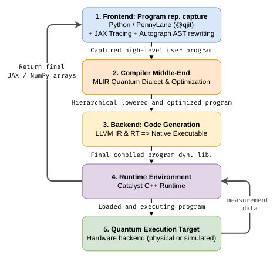
<figcaption class="paper-figure-caption"><b>Fig 1.</b> Fig. 1: High-level overview of the PennyLane program lowering process.</figcaption>
</figure>
<figure class="paper-figure-card">
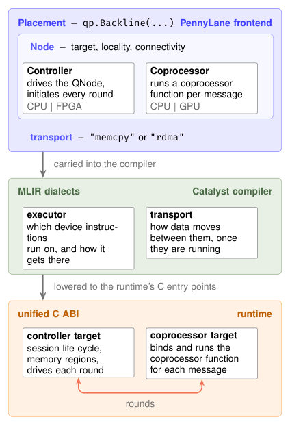
<figcaption class="paper-figure-caption"><b>Fig 2.</b> Fig. 2: The Backline abstractions and how they compose.</figcaption>
</figure>
<figure class="paper-figure-card">
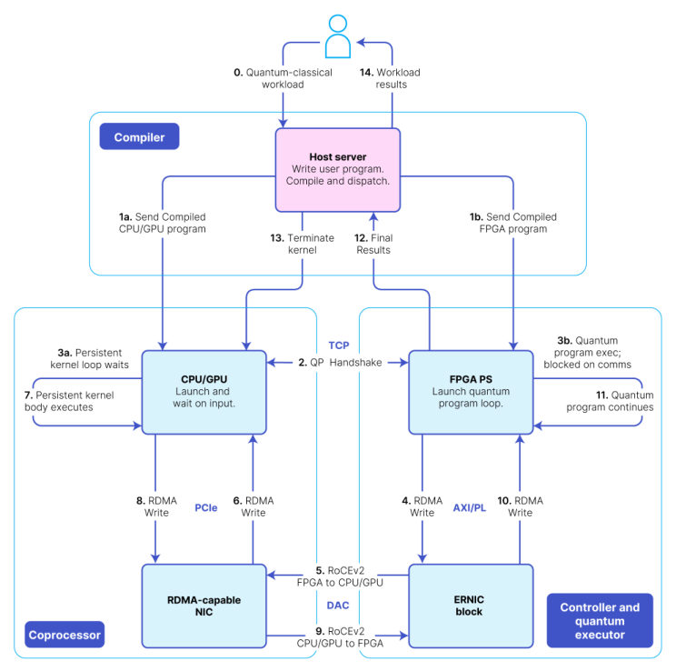
<figcaption class="paper-figure-caption"><b>Fig 3.</b> Fig. 4: Life cycle of a heterogeneous workload in Backline across a host, FPGA controller, and GPU coprocessor. Numbers indicate execution order. Steps 0-2 occur once per session. Steps 3-11 are one correction round and repeat for every decode. Steps 12-14 return results and tear down.</figcaption>
</figure>
<figure class="paper-figure-card">
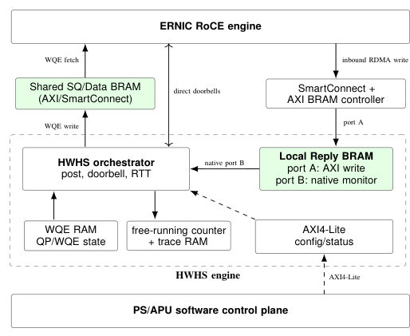
<figcaption class="paper-figure-caption"><b>Fig 4.</b> Fig. 5: Architecture of the VPK120 hardware-handshake engine, which connects the APU control plane, ERNIC, local request/reply storage, and hardware orchestrator.</figcaption>
</figure>
<figure class="paper-figure-card">
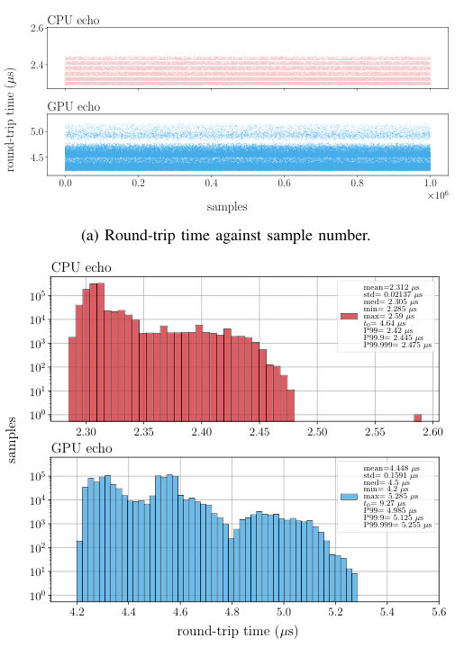
<figcaption class="paper-figure-caption"><b>Fig 5.</b> Fig. 6: Baseline steady-state round-trip latency over 106 −1 rounds from FPGA controller to and from CPU or GPU copro- cessor. Timing is measured by the FPGA clock domain, with the first warm-up sample excluded from all plots. Statistical quantities are given in the legend of each distribution plot, with the excluded warm-up value given by t0.</figcaption>
</figure>
</div>

<p><strong>Summary.</strong> This paper presents Backline, a novel compilation framework that bridges the gap between high-level quantum algorithm design in Python and the low-latency demands of fault-tolerant quantum computing. By compiling workloads through MLIR, it enables efficient, vendor-agnostic execution across heterogeneous hardware like CPUs, GPUs, and FPGAs. The results demonstrate microsecond-scale synchronous co-processing, critical for next-generation quantum systems.</p>
<p><strong>Why it may be interesting.</strong> The focus on low-latency, hardware-accelerated control loops (like QEC) is directly relevant to building scalable quantum processors, which is a core area of quantum information science.</p>
<details>
<summary>Detailed structure</summary>
<p><strong>Main problem.</strong> The primary challenge is moving quantum workloads from research prototypes to production-grade, fault-tolerant systems that require ultra-low latency.</p>
<p><strong>Main result.</strong> The authors demonstrated a heterogeneous compilation framework, Backline, achieving microsecond-scale synchronous co-processing latencies across CPUs, GPUs, and FPGAs.</p>
<p><strong>Method.</strong> They introduced Backline, a framework that compiles quantum-classical workloads from a high-level Python interface down through MLIR to target diverse, low-latency hardware accelerators.</p>
<p><strong>Model / system.</strong> The system involves quantum workloads requiring real-time Quantum Error Correction (QEC) running on heterogeneous hardware, including CPUs, GPUs, and FPGAs, orchestrated via an FPGA-based controller.</p>
<p><strong>Key observables.</strong> Median steady-state round-trip latencies (e.g., 2.305 $\mu$s to CPU, 4.5 $\mu$s to GPU) and the full distribution of RTT under varying message-issuing cadences.</p>
<p><strong>Important parameters / regimes.</strong> Latency Tiers (1 ns–1 $\mu$s for real-time control; 1 $\mu$s–100 $\mu$s for co-processing); $10^{6-1}$ rounds for steady-state measurements.</p>
<p><strong>Assumptions / limitations.</strong> The design assumes the ability to use dedicated dual-ported UltraRAMs for efficient reply buffering and that the system can manage highly non-uniform timing deadlines.</p>
<p><strong>Figures summary.</strong> Figures illustrate the high-level program lowering process, the FSM transition diagram for the hardware orchestrator, and comparative traces showing RTT distributions under back-to-back versus random-delayed message pacing.</p>
<p><strong>Paper structure.</strong> The paper progresses from defining the need for production-grade QEC execution, detailing the architecture of Backline within PennyLane/Catalyst, demonstrating the hardware-accelerated data movement, and finally benchmarking the resulting low-latency performance.</p>
</details>
<details>
<summary>Abstract</summary>
<p>Moving from quantum research and development to production-grade, fault-tolerant quantum workload execution remains one of the most significant challenges facing quantum platform builders. While Python frameworks have enabled an easy entry point for quantum algorithm design, the low-latency requirements for real-time quantum error correction (QEC) demand performance that traditional interpreted environments cannot provide. FPGAs and ASICs play a central role at these layers, but their specialized programming models make development rigid and time-consuming. CPUs, GPUs, and other accelerators introduce a different challenge: as infrastructure becomes increasingly heterogeneous, programming across different devices and their associated abstractions becomes more complex. Allowing researchers to write workloads in high-level languages that map to low-latency execution across diverse distributed target platforms will enable the development of key infrastructure for utility-scale quantum systems. For this, we introduce $\textit{Backline}$, a heterogeneous compilation and runtime framework built within PennyLane and Catalyst. Backline allows us to design and build quantum-classical workloads for high-performance and low-latency devices, with compilation directly from a Python interface through MLIR. We demonstrate the compilation and execution of several quantum workloads with low-latency data movement across a mix of CPUs, GPUs, and FPGAs, for both local and distributed remote hardware targets, all from a vendor-agnostic Python frontend. With an AMD VPK120 FPGA board as the controller, issuing each round from its hardware-handshake engine, we measured median steady-state round-trip latencies over RoCE v2 of $2.305~μ$s to an AMD Ryzen Threadripper PRO CPU and $4.5~μ$s to an AMD Instinct MI210 GPU across $10^6-1$ rounds per path, demonstrating microsecond-scale synchronous co-processing.</p>
</details>
<p><sub><a href="#top">↑ back to top</a></sub></p>

<p><a id="paper-2609.10037"></a></p>
<h3 id="semi-device-independent-quantum-randomness-certification-in-semiconductor-spin-noise-measurements"><a href="http://arxiv.org/abs/2609.10037v1">Semi-device-independent quantum randomness certification in semiconductor spin-noise measurements</a></h3>
<p><strong>Authors:</strong> Hamid Tebyanian, Marius Cizauskas, Manfred Bayer, Marc Assmann, Alex Greilich<br>
<strong>Type:</strong> both · <strong>Category:</strong> quantum information and computing · <strong>PDF:</strong> <a href="https://arxiv.org/pdf/2609.10037v1">https://arxiv.org/pdf/2609.10037v1</a><br>
<strong>Analysis basis:</strong> full PDF text, analyzed in chunks
<strong>Topic relevance:</strong> <code>quantum measurements</code> <strong>3/5</strong> · <code>quantum optics experiment</code> <strong>3/5</strong> · <code>QC/QI experiment</code> <strong>1/5</strong></p>
<div class="figure-strip-hint">↔ Scroll figures horizontally</div>
<div class="paper-figures-scroll">
<figure class="paper-figure-card">

<figcaption class="paper-figure-caption"><b>Fig 1.</b> Figure 1: Source-adversarial certification of semiconductor spin noise. A, Sources: bulk n-GaAs and a charged (In, Ga)As quantum-dot ensemble in a microcavity, in transverse field Bx; probe Faraday rotation δθF (t) from equilibrium spin fluctuations generates the orthogonally polarised signal. B, Trust boundary. The source and any adversary ρAE with memory E are untrusted, bounded only by the tested mean-photon-number and declared analogue range; the receiver (GT analyzer, nPBS, balanced photoreceiver BPR, ADC) is trusted and calibrated. Two-phase test rounds fix ¯ntest; the truncated-Fock SDP returns h∗ cert, which sets the extractor output. C, Three regimes (Table 1): spin-noise-matched...</figcaption>
</figure>
<figure class="paper-figure-card">

<figcaption class="paper-figure-caption"><b>Fig 2.</b> Figure 2: Experimental setup. A continuous-wave laser is split into a probe, which measures spin noise via Faraday rotation in the sample (held at 6 K in a transverse magnetic field Bx), and a local oscillator (LO) routed around the sample. The orthogonal-polarisation component after the sample interferes with the LO on a 50/50 non-polarizing beamsplitter (nPBS) and is detected by a balanced photoreceiver (BPR). The differential DC output drives the phase lock; the AC component is amplified, filtered, and digitized.</figcaption>
</figure>
<figure class="paper-figure-card">

<figcaption class="paper-figure-caption"><b>Fig 3.</b> Figure 3: Two spectral regimes in the stored spin-noise data. A, Normalised FPGA spectra stored for n-GaAs at 40 mW for the two saved lock settings (maximum- and minimum-spin- noise), showing the phase-selective narrow spin-noise resonance. B, Corresponding quantum-dot spectra at 20 mW: the spin-noise excess fills the analysed receiver band; the marker indicates an isolated 30.3% technical line outside the displayed range. Thin curves show the stored ratios; thick curves show frequency-binned medians for visibility. C, Full-band variance contrast ∆V of Eq. (1) from the 1.31 ms digitiser records at each recorded probe power; error bars are temporal-block standard errors from 128 contiguous...</figcaption>
</figure>
<figure class="paper-figure-card">

<figcaption class="paper-figure-caption"><b>Fig 4.</b> Figure 4: Narrowband and broadband spin-noise excess. Spectral excess 100 (Ssig − SLO)/SLO, at the maximum-spin-noise lock setting, obtained from Hann-windowed 1 µs blocks of the 1.31 ms records and collected into 10 MHz bins. A, n-GaAs. Traces are offset by 7% per probe power; dashed lines indicate their zero levels. The narrow Larmor signal increases with probe power within the predeclared matched band, 121 MHz to 131 MHz, shaded in grey. Filled circles give the matched-band excess. B, (In, Ga)As quantum dots, shown without offsets. The spin-noise excess extends across the receiver band and reaches its largest broadband value near 30 mW. Shaded bands and error bars denote ±1 standard...</figcaption>
</figure>
<figure class="paper-figure-card">

<figcaption class="paper-figure-caption"><b>Fig 5.</b> Figure 5: Certified entropy versus tested source energy. Certified per-symbol min- entropy h∗ cert as a function of the mean-energy bound ¯n for the three calibrated receiver modes, all obtained using the same truncated-Fock SDP with the corresponding noisy-homodyne POVM. Markers: experimental tested-energy operating points; star: the 131ms GaAs matched acquisition; inset: enlarged experimental region. GaAs broadband points form the vacuum-limited receiver benchmark, GaAs matched points the narrowband spin-noise-attributed certificates, and quantum-dot points the broadband signal-resolved certificates.</figcaption>
</figure>
</div>

<p><strong>Summary.</strong> This paper presents a novel semi-device-independent method to certify the quantum randomness generated by semiconductor spin noise. By applying semidefinite programming to the measured fluctuations, the authors establish high certified entropy rates for both quantum-dot and bulk GaAs systems. This work is significant because it provides a robust, model-free security guarantee for a scalable solid-state quantum random number generator.</p>
<p><strong>Why it may be interesting.</strong> This work bridges quantum optics/information theory with solid-state physics by providing a rigorous, device-independent security proof for a practical quantum source, which is highly relevant for quantum networking and computation.</p>
<details>
<summary>Detailed structure</summary>
<p><strong>Main problem.</strong> The core challenge is certifying the quantum origin of fluctuations for quantum random-number generation (QRNG) when using complex solid-state systems like semiconductor spin noise.</p>
<p><strong>Main result.</strong> The authors achieved certified entropy rates of 3.2–3.4 Gbit/s from a quantum-dot ensemble and 33 Mbit/s from n-GaAs, significantly exceeding previous spin-noise generator rates.</p>
<p><strong>Method.</strong> They employ a semi-device-independent quantum randomness certification framework using a Semidefinite Programme (SDP) to bound the conditional min-entropy.</p>
<p><strong>Model / system.</strong> The physical platform is semiconductor spin noise measured via homodyne detection. The certification treats the source as untrusted, constrained only by an experimentally tested mean-photon-number bound, while the receiver is modeled as a calibrated, noisy measurement.</p>
<p><strong>Key observables.</strong> Certified entropy rates (Gbit/s or Mbit/s), mean-photon-number bound ($ar{n}$), and the conditional min-entropy ($h^*_{	ext{cert}}$).</p>
<p><strong>Important parameters / regimes.</strong> The achieved rates (3.2–3.4 Gbit/s for QDs; 33 Mbit/s for n-GaAs), the energy bound $ar{n}$, and the detection regimes (broadband vs. matched resonance).</p>
<p><strong>Assumptions / limitations.</strong> The certification relies on the source being constrained by an experimentally tested mean-photon-number bound, and the receiver is modeled as a calibrated POVM. The analysis uses Fock-space truncation and assumes IID effective modes in some analyses.</p>
<p><strong>Figures summary.</strong> Figures summarize the certification architecture, compare different detection regimes (QD vs. GaAs), and show the dependence of entropy on binning and energy constraints.</p>
<p><strong>Paper structure.</strong> The paper introduces the problem of source certification in solid-state QRNG, details the semi-device-independent methodology using SDPs, presents the application to spin-noise measurements in both quantum-dot and bulk GaAs systems, and concludes with quantitative rate comparisons.</p>
</details>
<details>
<summary>Abstract</summary>
<p>Complex solid-state systems are promising platforms for scalable, high-bandwidth quantum random-number generation, yet certifying the quantum origin of their fluctuations remains difficult because the underlying microscopic dynamics are hard to model and validate. Here we demonstrate semi-device-independent quantum randomness certification from semiconductor spin noise, to our knowledge the first such certificate on any spin-noise source, without relying on a microscopic model of the spin system. The untrusted optical source is constrained by an experimentally tested mean-photon-number bound together with a declared analogue-range and per-sample clipping ceiling, while the trusted receiver is described as a calibrated, noisy, coarse-grained homodyne measurement. Using a semidefinite programme with rigorously controlled Fock-space truncation, we certify randomness that remains private against an adversary holding arbitrary quantum side information. Offline analysis yields certified entropy rates of $3.2$--$3.4$\,Gbit/s from a singly charged (In,Ga)As quantum-dot ensemble and $33$\,Mbit/s from $n$-GaAs in a spin-noise-matched detection mode. This exceeds the certified entropy rate of earlier spin-noise generators by more than two orders of magnitude, and the certificate tolerates a resolved per-symbol energy contribution from the solid-state emitter itself rather than requiring a near-vacuum input.</p>
</details>
<p><sub><a href="#top">↑ back to top</a></sub></p>

<p><a id="paper-2609.09779"></a></p>
<h3 id="split-step-dirac-cellular-automata-for-continuous-time-dirac-dynamics-on-finite-spatial-lattices"><a href="http://arxiv.org/abs/2609.09779v1">Split-Step Dirac Cellular Automata for Continuous-Time Dirac Dynamics on Finite Spatial Lattices</a></h3>
<p><strong>Authors:</strong> Wei-Ting Wang, Pei-Ming Ho, Ching-Ray Chang<br>
<strong>Type:</strong> both · <strong>Category:</strong> other · <strong>PDF:</strong> <a href="https://arxiv.org/pdf/2609.09779v1">https://arxiv.org/pdf/2609.09779v1</a><br>
<strong>Analysis basis:</strong> full PDF text, analyzed in chunks
<strong>Topic relevance:</strong> <code>analog quantum simulation</code> <strong>3/5</strong> · <code>QC/QI experiment</code> <strong>2/5</strong> · <code>methods for driven-dissipative</code> <strong>2/5</strong></p>
<div class="figure-strip-hint">↔ Scroll figures horizontally</div>
<div class="paper-figures-scroll">
<figure class="paper-figure-card">

<figcaption class="paper-figure-caption"><b>Fig 1.</b> FIG. 1. (a) Comparison of DCA and SDCA through spacetime diagrams and velocity expectation values. The initial state of the particle is |Ψ(t = 0)⟩= 1 √</figcaption>
</figure>
<figure class="paper-figure-card">

<figcaption class="paper-figure-caption"><b>Fig 2.</b> FIG. 2. Comparison of Dirac dynamics simulated using the DCA and the SDCA (M = 2) against the exact continuous-time limit of a highly localized state |Ψ(0)⟩= (cos(θ/2)|0⟩c +eiϕ sin(θ/2)|1⟩c)⊗|x = 0⟩with mass m = π/8 on a finite spatial lattice. Top panels: Time evolution of the Pauli matrix expectation values (⟨σx⟩, ⟨σy⟩, ⟨σz⟩) and the entanglement entropy S with (a) θ = π/2, ϕ = 0, and (b) θ = π/2, ϕ = π/2. Bottom panels: Heatmaps displaying ⟨σz⟩and S at time step t = 5 as a function of the initial state angles θ and ϕ for the (c) exact continuous limit, (d) DCA, and (e) SDCA.</figcaption>
</figure>
<figure class="paper-figure-card">

<figcaption class="paper-figure-caption"><b>Fig 3.</b> FIG. 3. Experimental results of the DCA for a highly localized initial state. Top Panel: Comparison of results executed on heavy hexagon (ibm kingston) and square (ibm miami) lattice backends. (a) Two-qubit gate depth scaling for single-step DCA circuits as a function of the external space size n. Insets illustrate the physical connectivity graphs of the respective hardware topologies. (b) Time evolution of the three Pauli expectation values (⟨σx⟩, ⟨σy⟩, ⟨σz⟩) and the entanglement entropy (S) for the particle state |Ψ(0)⟩= |0⟩c ⊗|x = 0⟩with mass m = π/2. The insets show the specific physical qubit mappings on the devices. Bottom Panel: Performance comparison of standard unitary and dynamic...</figcaption>
</figure>
<figure class="paper-figure-card">

<figcaption class="paper-figure-caption"><b>Fig 4.</b> FIG. 4. Experimental results of the SDCA for a highly localized initial state executed on the ibm aachen quantum processor. (a) Time evolution of the internal space Pauli expectation values (⟨σx⟩, ⟨σy⟩, ⟨σz⟩) and the corresponding entanglement entropy (S) for the initial state |Ψ(0)⟩= |0⟩c ⊗|x = 0⟩with mass m = π/2. (b) and (c) Experimental spacetime probability diagrams, P(x, t) of the initial state |Ψ(0)⟩c = 1 √</figcaption>
</figure>
<figure class="paper-figure-card">

<figcaption class="paper-figure-caption"><b>Fig 5.</b> FIG. 5. The time-dependent functions (a) Fm(k, t) and (b) Gm(k, t) plotted over the Brillouin zone with t = 2. Both functions exhibit anti-symmetry under a k →k + π momen- tum shift.</figcaption>
</figure>
</div>

<p><strong>Summary.</strong> This work introduces the Split-Step Dirac Cellular Automaton (SDCA) to overcome artificial symmetries inherent in standard DCA simulations of Dirac dynamics on finite lattices. By using a fractional-step Trotterization, SDCA restores the correct interference physics, allowing for accurate simulation of phenomena like Zitterbewegung. The authors demonstrate this capability both numerically and experimentally on quantum processors, providing a practical blueprint for quantum simulation of relativistic matter.</p>
<p><strong>Why it may be interesting.</strong> The ability to simulate relativistic quantum dynamics (Dirac equation) with improved temporal resolution on near-term quantum hardware, while explicitly addressing lattice artifacts, is highly relevant for quantum simulation in condensed matter.</p>
<details>
<summary>Detailed structure</summary>
<p><strong>Main problem.</strong> Standard Dirac Cellular Automata (DCA) suffer from artificial phase-matching symmetries on finite grids that suppress crucial interference phenomena like Zitterbewegung.</p>
<p><strong>Main result.</strong> The proposed Split-Step DCA (SDCA) breaks this symmetry by using a fractional-step Trotterization, successfully recovering the characteristic velocity oscillations and entanglement dynamics of the continuous-time Dirac model.</p>
<p><strong>Method.</strong> The authors develop the SDCA by employing a Trotterized fractional-step scheme in the momentum representation, which is then benchmarked using quantum circuit simulations on IBM Quantum processors.</p>
<p><strong>Model / system.</strong> The paper simulates Dirac dynamics for a spin-1/2 particle on a finite spatial lattice. The model compares the standard DCA to the improved SDCA, which approximates continuous-time evolution.</p>
<p><strong>Key observables.</strong> Velocity expectation value ($\langle V 
angle$), entanglement entropy ($S$), and the time evolution of Pauli expectation values ($\langle\sigma_x
angle, \langle\sigma_y
angle, \langle\sigma_z
angle$).</p>
<p><strong>Important parameters / regimes.</strong> The ratio of temporal to spatial discretization ($\delta t$ vs $\delta x$), the number of sub-steps ($M$), and the lattice size ($N$).</p>
<p><strong>Assumptions / limitations.</strong> The primary assumption is that the SDCA framework provides a practical way to improve temporal resolution while keeping the spatial quantum register fixed, despite increased circuit depth.</p>
<p><strong>Figures summary.</strong> Figures compare spacetime diagrams and velocity expectation values for DCA vs. SDCA; another set compares time evolution of observables and entanglement entropy across different simulation methods and hardware backends.</p>
<p><strong>Paper structure.</strong> The paper first identifies the symmetry-breaking limitation of DCA, then introduces and details the SDCA formulation, followed by analytical and numerical benchmarking, and finally, an experimental demonstration and analysis of hardware trade-offs (e.g., QFT implementation).</p>
</details>
<details>
<summary>Abstract</summary>
<p>Dirac Cellular Automata (DCA) provide a framework for simulating Dirac dynamics, yet the rigid coupling between spatial and temporal resolutions can introduce artificial phase-matching symmetries on finite grids that suppress interference phenomena such as Zitterbewegung. In this work, we propose a Split-Step Dirac Cellular Automaton (SDCA) that enables continuous-time Dirac evolution at fixed spatial discretization. By employing a Trotterized fractional-step scheme in the momentum representation, SDCA breaks the phase-matching cancellation present in the standard DCA and recovers the interference dynamics of the continuous-time limit. We benchmark the SDCA through analytical and numerical studies and demonstrate its implementation on IBM Quantum processors. Despite the increased circuit depth required for finer temporal resolution, the NISQ implementation reproduces the characteristic velocity oscillations and entanglement-entropy dynamics of the continuous-time model. We further investigate hardware-topology trade-offs and dynamic circuit implementations of the Quantum Fourier Transform (QFT), highlighting the competing effects of gate errors, measurement, and feed-forward latency. These results demonstrate that SDCA provides a practical framework for improving temporal resolution while maintaining a fixed spatial quantum register, enabling the exploration of relativistic quantum dynamics on near-term quantum devices.</p>
</details>
<p><sub><a href="#top">↑ back to top</a></sub></p>
<hr>
<p>
<a href="index.html">← Index</a>
 · <a href="papers_01.html">← Previous</a> · <a href="papers_03.html">Next →</a>
</p>
<hr>

</body>
</html>
